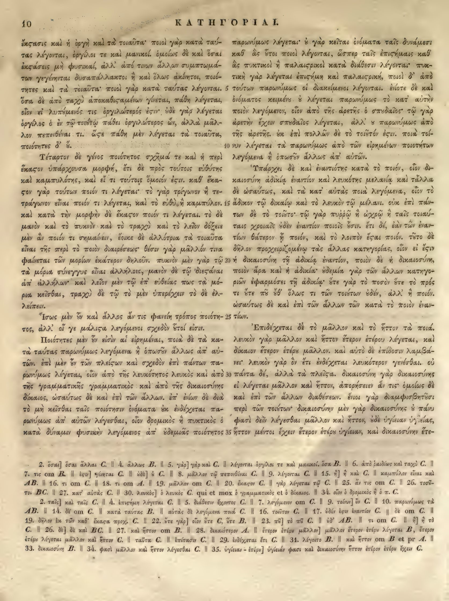

10a
| 1 | ἔκστασις καὶ ἡ ὀργὴ καὶ τὰ τοιαῦτα· ποιοὶ γὰρ κατὰ ταύ- | 0.95 |
|---|---|---|
| 2 | τας λέγονται, ὀργίλοι τε καὶ μανικοί. ὁμοίως δὲ καὶ ὅσαι | 0.95 |
| 3 | <choice resp="#hathiTrustOCR"><sic>ἐκςάσεις</sic><corr>ἐκστάσεις</corr></choice> μὴ φυσικαί, ἀλλ’ ἀπό τινων ἄλλων συμπτωμά- | 0.95 |
| 4 | των γεγένηνται δυσαπάλλακτοι ἢ καὶ ὅλως ἀκίνητοι, ποιό- | 0.95 |
| 5 | τητες καὶ τὰ τοιαῦτα· ποιοὶ γὰρ κατὰ ταύτας λέγονται. | 0.95 |
| 6 | ὅσα δὲ ἀπὸ ταχὺ <choice resp="#hathiTrustOCR"><sic>ἀποκαθιςαμένων</sic><corr>ἀποκαθισταμένων</corr></choice> γίνεται, πάθη λέγεται, | 0.95 |
| 7 | οἷον εἰ λυπηθείς τις ὀργιλώτερος ἔστιν· <choice resp="#MinioPaluelloL1949"><sic>οὐδὲ</sic><corr>οὐ</corr></choice> γὰρ λέγεται | 0.95 |
| 8 | ὀργίλος ὁ ἐν τῷ τοιούτῳ πάθει ὀργιλώτερος ὤν, ἀλλὰ μᾶλ- | 0.95 |
| 9 | λον πεπονθέναι τι. <choice resp="#hathiTrustOCR"><sic>ὥςε</sic><corr>ὥστε</corr></choice> πάθη μὲν λέγεται τὰ τοιαῦτα, | 0.95 |
| 10 | ποιότητες <choice resp="#MinioPaluelloL1949"><sic>δ</sic><corr>δὲ</corr></choice>’ οὔ. | 0.95 |
| 11 | Τέταρτον δὲ γένος ποιότητος σχῆμά τε καὶ ἡ περὶ | 0.95 |
| 12 | <choice resp="#hathiTrustOCR"><sic>ἕκαςον</sic><corr>ἕκαστον</corr></choice> ὑπάρχουσα μορφή, ἔτι δὲ πρὸς τούτοις εὐθύτης | 0.95 |
| 13 | καὶ καμπυλότης, καὶ εἴ τι τούτοις ὅμοιον ἔστιν. καθ’ ἕκα- | 0.95 |
| 14 | στον γὰρ τούτων ποιόν τι λέγεται· <choice resp="#MinioPaluelloL1949"><sic>τὸ</sic><corr>τῷ</corr></choice> γὰρ τρίγωνον ἢ τε- | 0.95 |
| 15 | τράγωνον εἶναι ποιόν τι λέγεται, καὶ <choice resp="#MinioPaluelloL1949"><sic>τὸ</sic><corr>τῷ</corr></choice> εὐθὺ ἢ καμπύλον. | 0.95 |
| 16 | καὶ κατὰ τὴν μορφὴν δὲ <choice resp="#hathiTrustOCR"><sic>ἕκαςον</sic><corr>ἕκαστον</corr></choice> ποιόν τι λέγεται. τὸ δὲ | 0.95 |
| 17 | μανὸν καὶ τὸ πυκνὸν καὶ τὸ τραχὺ καὶ τὸ λεῖον δόξειε | 0.95 |
| 18 | μὲν ἂν ποιόν τι σημαίνειν, ἔοικε δὲ ἀλλότρια τὰ τοιαῦτα | 0.95 |
| 19 | εἶναι τῆς περὶ τὸ ποιὸν διαιρέσεως· θέσιν γάρ μᾶλλόν τινα | 0.95 |
| 20 | φαίνεται τῶν μορίων ἑκάτερον δηλοῦν. πυκνὸν μὲν γάρ τῷ | 0.95 |
| 21 | τὰ μόρια σύνεγγυς εἶναι ἀλλήλοις, μανὸν δὲ τῷ διεσπᾶ- | 0.95 |
| 22 | σθαι ἀπ’ ἀλλήλων· καὶ λεῖον μὲν τῷ ἐπ’ εὐθείας πως τὰ μό- | 0.95 |
| 23 | ρια κεῖσθαι, τραχὺ δὲ τῷ τὸ μὲν ὑπερέχειν τὸ δὲ ἐλ- | 0.95 |
| 24 | λείπειν. | 0.95 |
| 25 | Ἴσως μὲν οὖν καὶ ἄλλος ἄν τις φανείη τρόπος ποιότη- | 0.95 |
| 26 | τος, ἀλλ’ οἵ γε <choice resp="#hathiTrustOCR"><sic>μάλιςα</sic><corr>μάλιστα</corr></choice> λεγόμενοι σχεδὸν <choice resp="#MinioPaluelloL1949"><sic>τοῖοί</sic><corr>τοσοῦτοί</corr></choice> εἰσιν. | 0.95 |
| 27 | Ποιότητες μὲν οὖν εἰσὶν αἱ εἰρημέναι, ποιὰ δὲ τὰ κα- | 0.95 |
| 28 | τὰ ταύτας παρωνύμως λεγόμενα ἢ ὁπωσοῦν ἄλλως ἀπ’ αὐ- | 0.95 |
| 29 | τῶν. ἐπὶ μὲν οὖν τῶν <choice resp="#MinioPaluelloL1949"><sic>πλείσων</sic><corr>πλείστων</corr></choice> καὶ σχεδὸν ἐπὶ πάντων πα- | 0.95 |
| 30 | ρωνύμως λέγεται, οἷον ἀπὸ τῆς λευκότητος λευκὸς καὶ ἀπὸ | 0.95 |
| 31 | τῆς γραμματικῆς γραμματικὸς καὶ ἀπὸ τῆς δικαιοσύνης | 0.95 |
| 32 | δίκαιος, ὡσαύτως δὲ καὶ ἐπὶ τῶν ἄλλων. ἐπ’ ἐνίων δὲ διὰ | 0.95 |
| 33 | τὸ μὴ κεῖσθαι ταῖς ποιότησιν ὀνόματα οὐκ ἐνδέχεται πα- | 0.95 |
| 34 | ρωνύμως ἀπ’ αὐτῶν λέγεσθαι, οἷον δρομικὸς ἢ πυκτικὸς ὁ | 0.95 |
| 35 | κατὰ δύναμιν φυσικὴν λεγόμενος ἀπ’ οὐδεμιᾶς ποιότητος | 0.95 |
10b
| 1 | παρωνύμως λέγεται· <choice resp="#MinioPaluelloL1949"><sic>ὃ</sic><corr>οὐ</corr></choice> γὰρ κεῖται ὀνόματα ταῖς δυνάμεσι | 0.95 |
|---|---|---|
| 2 | καθ' ἃς <choice resp="#MinioPaluelloL1949"><sic>ἕτοι</sic><corr>οὗτοι</corr></choice> ποιοί λέγονται, ὥσπερ ταῖς ἐπιστήμαις καθ' | 0.95 |
| 3 | ἃς πυκτικοί ἢ παλαισρικοὶ κατὰ διάθεσιν λέγονται· πυκ- | 0.95 |
| 4 | τικὴ γὰρ λέγεται ἐπιστήμη καὶ παλαισρική, ποιοὶ <choice resp="#MinioPaluelloL1949"><sic>δ</sic><corr>δὲ</corr></choice>' ἀπὸ | 0.95 |
| 5 | τούτων παρωνύμως οἱ διακείμενοι λέγονται. ἐνίοτε δὲ καὶ | 0.95 |
| 6 | ὀνόματος κειμένου <choice resp="#MinioPaluelloL1949"><sic>ὃ</sic><corr>οὐ</corr></choice> λέγεται παρωνύμως τὸ κατ' αὐτὴν | 0.95 |
| 7 | ποιὸν λεγόμενον, οἷον ἀπὸ τῆς ἀρετῆς ὁ σπουδαῖος· τῷ γὰρ | 0.95 |
| 8 | ἀρετὴν ἔχειν σπουδαῖος λέγεται, ἀλλ' οὐ παρωνύμως ἀπὸ | 0.95 |
| 9 | τῆς ἀρετῆς. ἐπὶ πολλῶν δὲ τὸ τοιοῦτόν ἐστιν. ποιὰ τοί- | 0.95 |
| 10 | νυν λέγεται τὰ παρωνύμως ἀπὸ τῶν εἰρημένων ποιοτήτων | 0.95 |
| 11 | λεγόμενα ἢ ὁπωσοῦν ἄλλως ἀπ' αὐτῶν. | 0.95 |
| 12 | Ὑπάρχει δὲ καὶ ἐναντιότης κατὰ τὸ ποιόν, οἷον δι- | 0.95 |
| 13 | καιοσύνη ἀδικίᾳ ἐναντίον καὶ λευκότης μελανίᾳ καὶ τὰ λοι- | 0.95 |
| 14 | πὰ δὲ ὡσαύτως, καὶ τὰ κατ' αὐτὰς ποιὰ λεγόμενα, οἷον τὸ | 0.95 |
| 15 | ἄδικον τῷ δικαίῳ καὶ τὸ λευκὸν τῷ μέλανι. οὐκ ἐπὶ πάν- | 0.95 |
| 16 | των δὲ τὸ <choice resp="#MinioPaluelloL1949"><sic>τοιοῦτο</sic><corr>τοιοῦτον</corr></choice>· τῷ γὰρ πυρρῷ ἢ ὠχρῷ ἢ ταῖς τοιαύ- | 0.95 |
| 17 | ταις χροιαῖς οὐδὲν ἐναντίον ποιοῖς ἐστιν. ἔτι δέ, ἐὰν τῶν ἐναν- | 0.95 |
| 18 | τίων θάτερον ᾖ ποιόν, καὶ τὸ λοιπὸν ἔσται ποιόν. τοῦτο δὲ | 0.95 |
| 19 | δῆλον προχειριζομένῳ τὰς ἄλλας κατηγορίας, οἷον εἰ ἔστιν | 0.95 |
| 20 | ἡ δικαιοσύνη τῇ ἀδικίᾳ ἐναντίον, ποιὸν δὲ ἡ δικαιοσύνη, | 0.95 |
| 21 | ποιὸν ἄρα καὶ ἡ ἀδικία· οὐδεμία γὰρ τῶν ἄλλων κατηγο- | 0.95 |
| 22 | ριῶν <choice resp="#MinioPaluelloL1949"><sic>ἐφαρμόττει</sic><corr>ἐφαρμόζει</corr></choice> τῇ ἀδικίᾳ· οὔτε γὰρ τὸ ποσὸν οὔτε τὸ πρός | 0.95 |
| 23 | τι οὔτε τὸ ποῦ <choice resp="#MinioPaluelloL1949"><sic>οὔθ</sic><corr>οὐδ</corr></choice>' ὅλως τι τῶν τοιούτων οὐδέν, ἀλλ' ἢ ποιόν. | 0.95 |
| 24 | ὡσαύτως δὲ καὶ ἐπὶ τῶν ἄλλων τῶν κατὰ τὸ ποιὸν ἐναν- | 0.95 |
| 25 | τίων. | 0.95 |
| 26 | Ἐπιδέχεται δὲ τὸ μᾶλλον καὶ τὸ ἧττον τὰ ποιά. | 0.95 |
| 27 | λευκὸν γὰρ μᾶλλον καὶ ἧττον ἕτερον ἑτέρου λέγεται, καὶ | 0.95 |
| 28 | δίκαιον ἕτερον ἑτέρου μᾶλλον. καὶ αὐτὸ δὲ ἐπίδοσιν λαμβά- | 0.95 |
| 29 | νει· λευκὸν γὰρ ὂν ἔτι ἐνδέχεται λευκότερον γενέσθαι. οὐ | 0.95 |
| 30 | πάντα δέ, ἀλλὰ τὰ <choice resp="#MinioPaluelloL1949"><sic>πλείω</sic><corr>πλεῖστα</corr></choice>. δικαιοσύνη γὰρ δικαιοσύνης | 0.95 |
| 31 | εἰ λέγεται μᾶλλον καὶ ἧττον, ἀπορήσειεν ἄν τις· ὁμοίως δὲ | 0.95 |
| 32 | καὶ ἐπὶ τῶν ἄλλων διαθέσεων. ἔνιοι γὰρ διαμφισβητοῦσι | 0.95 |
| 33 | περὶ τῶν τοιούτων· <choice resp="#MinioPaluelloL1949"><sic>δικαιοσύνη</sic><corr>δικαιοσύνην</corr></choice> μὲν γὰρ δικαιοσύνης <choice resp="#MinioPaluelloL1949"><sic>ὁ</sic><corr>οὐ</corr></choice> πάνυ | 0.95 |
| 34 | φασι δεῖν λέγεσθαι μᾶλλον καὶ ἧττον, οὐδὲ ὑγίειαν ὑγιείας, | 0.95 |
| 35 | ἧττον μέντοι ἔχειν ἕτερον ἑτέρου ὑγίειαν, καὶ δικαιοσύνην ἑτέ- | 0.95 |
Textual apparatus
- n1 [both] BC. || 27. κατ' αὐτὰς C. || 30. λευκὸς] ὁ λευκὸς C. qui et mox ὁ γραμματικὸς et ὁ δίκαιος. || 34. οἷον ὁ δρομικὸς ἢ ὁ π. C.
- n2 [both] 2. ταῖς] καὶ ταῖς C. || 4. ἐπισήμη λέγεται C. || 5. διάθεσιν ἔχοντες C. || 7. λεγόμενον om C. || 9. τοίνυν] ἂν C. || 10. παρωνύμως τὰ AB. || 14. δὲ om C. || κατὰ ταύτας B. || αὐτὰς δὲ λεγόμενα ποιὰ C. || 16. τοῦτον C. || 17. ἐὰν ἔχῃ ἐναντίον C. || δὲ om C. || 19. δῆλον ἐκ τῶν καθ' ἕκαστα προχ. C. || 22. ὅτε γὰρ] οἷον ὅτε C, ὅτε B. || 23. πῶ] τὸ πῶ C. || ἐδ' AB. || τι om C. || ᾗ] ἡ τὸ C. || 26. δὲ] δὲ καὶ BC. || 27. καὶ ἧττον om B. || 28. δικαιότερον A. || ἕτερον ἑτέρῳ μᾶλλον] μᾶλλον ἕτερον ἑτέρῳ λέγεται B, ἕτερον ἑτέρῳ λέγεται μᾶλλον καὶ ἧττον C. || ταῦτα C. || ἐπίτασιν C. || 29. ἐνδέχεται ἔτι C. || 31. λέγοιτο B. || καὶ ἧττον om B et pr A. || 33. δικαιοσύνη B. || 34. φασὶ μᾶλλον καὶ ἧττον λέγεσθαι C. || 35. ὑγίειαν - ἕτερα] ὑγιείαν φασι καὶ δικαιοσύνην ἧττον ἕτερον ἑτέρῳ ἔχειν C.
Verifier issues
- No verifier or gutter-overlap issues.
All Greek-word differences from Minio–Paluello, L. 1949 (65)
This inventory is exhaustive at the Greek-word level; it does not imply that either reading is an error.
- replace 10a6: ἀποκαθισταμένων γίνεται ↔ καθισταμένων γίγνεται (anchors: ταχὺ … πάθη)
- replace 10a7: λυπηθείς τις ↔ λυπούμενος (anchors: εἰ … ὀργιλώτερος)
- orthographic_or_diacritic 10a7: ὀργιλώτερος ↔ ὀργιλώτερός (anchors: τις … ἔστιν)
- orthographic_or_diacritic 10a7: ἔστιν ↔ ἐστιν (anchors: ὀργιλώτερος … οὐδὲ)
- replace 10a7: οὐδὲ ↔ οὐ (anchors: ἔστιν … γὰρ)
- replace 10a10: δ ↔ δὲ (anchors: ποιότητες … οὔ)
- orthographic_or_diacritic 10a13: ὅμοιον ↔ ὅμοιόν (anchors: τούτοις … ἔστιν)
- orthographic_or_diacritic 10a13: ἔστιν ↔ ἐστιν (anchors: ὅμοιον … καθ)
- replace 10a14: τὸ ↔ τῷ (anchors: λέγεται … γὰρ)
- replace 10a15: τὸ ↔ τῷ (anchors: καὶ … εὐθὺ)
- orthographic_or_diacritic 10a18: ποιόν ↔ ποιὸν (anchors: ἂν … τι)
- delete 10a18: τι ↔ ∅ (anchors: ποιόν … σημαίνειν)
- insert 10a19: ∅ ↔ τινα (anchors: γάρ … μᾶλλόν)
- orthographic_or_diacritic 10a19: μᾶλλόν ↔ μᾶλλον (anchors: γάρ … τινα)
- delete 10a19: τινα ↔ ∅ (anchors: μᾶλλόν … φαίνεται)
- orthographic_or_diacritic 10a20: γάρ ↔ γὰρ (anchors: μὲν … τῷ)
- replace 10a21: διεσπᾶσθαι ↔ διεστάναι (anchors: τῷ … ἀπ)
- orthographic_or_diacritic 10a25: Ἴσως ↔ ἴσως (anchors: ἐλλείπειν … μὲν)
- replace 10a26: τοῖοί ↔ τοσοῦτοί (anchors: σχεδὸν … εἰσιν)
- replace 10a29: πλείσων ↔ πλείστων (anchors: τῶν … καὶ)
- insert 10a30: ∅ ↔ ὁ (anchors: λευκότητος … λευκὸς)
- insert 10a31: ∅ ↔ ὁ (anchors: γραμματικῆς … γραμματικὸς)
- insert 10a31: ∅ ↔ ὁ (anchors: δικαιοσύνης … δίκαιος)
- insert 10a34: ∅ ↔ ὁ (anchors: οἷον … δρομικὸς)
- insert 10a34: ∅ ↔ ὁ (anchors: ἢ … πυκτικὸς)
- replace 10b1: ὃ ↔ οὐ (anchors: λέγεται … γὰρ)
- replace 10b2: ἕτοι ↔ οὗτοι (anchors: ἃς … ποιοί)
- orthographic_or_diacritic 10b2: ποιοί ↔ ποιοὶ (anchors: ἕτοι … λέγονται)
- insert 10b2: ∅ ↔ καὶ (anchors: ὥσπερ … ταῖς)
- orthographic_or_diacritic 10b3: πυκτικοί ↔ πυκτικοὶ (anchors: ἃς … ἢ)
- replace 10b3: παλαισρικοὶ ↔ παλαιστρικοὶ οἱ (anchors: ἢ … κατὰ)
- insert 10b4: ∅ ↔ ἐπιστήμη (anchors: γὰρ … λέγεται)
- delete 10b4: ἐπιστήμη ↔ ∅ (anchors: λέγεται … καὶ)
- replace 10b4: παλαισρική ↔ παλαιστρική (anchors: καὶ … ποιοὶ)
- replace 10b4: δ ↔ δὲ (anchors: ποιοὶ … ἀπὸ)
- replace 10b6: ὃ ↔ οὐ (anchors: κειμένου … λέγεται)
- insert 10b9: ∅ ↔ οὐκ (anchors: ἀρετῆς … ἐπὶ)
- replace 10b9: τοίνυν ↔ οὖν (anchors: ποιὰ … λέγεται)
- replace 10b13: τὰ λοιπὰ δὲ ↔ τἆλλα (anchors: καὶ … ὡσαύτως)
- insert 10b14: ∅ ↔ δὲ (anchors: αὐτὰς … ποιὰ)
- replace 10b16: τοιοῦτο ↔ τοιοῦτον (anchors: τὸ … τῷ)
- orthographic_or_diacritic 10b16: πυρρῷ ↔ πυῤῥῷ (anchors: γὰρ … ἢ)
- orthographic_or_diacritic 10b17: οὐδὲν ↔ οὐδέν (anchors: χροιαῖς … ἐναντίον)
- insert 10b17: ∅ ↔ ἐστιν (anchors: οὐδὲν … ἐναντίον)
- replace 10b17: ἐστιν ↔ οὖσιν (anchors: ποιοῖς … ἔτι)
- delete 10b17: δέ ↔ ∅ (anchors: ἔτι … ἐὰν)
- replace 10b22: ἐφαρμόττει ↔ ἐφαρμόζει (anchors: κατηγοριῶν … τῇ)
- delete 10b22: γὰρ τὸ ↔ ∅ (anchors: οὔτε … ποσὸν)
- delete 10b22: τὸ ↔ ∅ (anchors: οὔτε … πρός)
- delete 10b23: τὸ ↔ ∅ (anchors: οὔτε … ποῦ)
- orthographic_or_diacritic 10b23: ποῦ ↔ πού (anchors: τὸ … οὔθ)
- replace 10b23: οὔθ ↔ οὐδ (anchors: ποῦ … ὅλως)
- orthographic_or_diacritic 10b23: οὐδέν ↔ οὐδὲν (anchors: τοιούτων … ἀλλ)
- delete 10b24: τῶν ↔ ∅ (anchors: ἄλλων … κατὰ)
- insert 10b26: ∅ ↔ καὶ (anchors: δὲ … τὸ)
- replace 10b30: πλείω ↔ πλεῖστα (anchors: τὰ … δικαιοσύνη)
- delete 10b31: καὶ ἧττον ↔ ∅ (anchors: μᾶλλον … ἀπορήσειεν)
- replace 10b33: δικαιοσύνη ↔ δικαιοσύνην (anchors: τοιούτων … μὲν)
- replace 10b33: ὁ ↔ οὐ (anchors: δικαιοσύνης … πάνυ)
- orthographic_or_diacritic 10b34: φασι ↔ φασὶ (anchors: πάνυ … δεῖν)
- delete 10b34: δεῖν λέγεσθαι ↔ ∅ (anchors: φασι … μᾶλλον)
- insert 10b34: ∅ ↔ λέγεσθαι (anchors: ἧττον … οὐδὲ)
- orthographic_or_diacritic 10b35: ὑγίειαν ↔ ὑγίειάν (anchors: ἑτέρου … καὶ)
- insert 10b35: ∅ ↔ φασι (anchors: ὑγίειαν … καὶ)
- replace 10b35: ἑτέ ρον ἑτέρῳ ↔ ἧττον ἕτερον ἑτέρου (anchors: δικαιοσύνην … ὡσαύτως)
Encoded TEI choices (22)
- a3
#hathiTrustOCR: <choice resp="#hathiTrustOCR"><sic>ἐκςάσεις</sic><corr>ἐκστάσεις</corr></choice> (1.00) — Aligned Hathi στ-ligature OCR correction: deterministic repair of the Hathi internal final sigma agrees with the scan and reference crop. - a6
#hathiTrustOCR: <choice resp="#hathiTrustOCR"><sic>ἀποκαθιςαμένων</sic><corr>ἀποκαθισταμένων</corr></choice> (1.00) — Aligned Hathi στ-ligature OCR correction: deterministic repair of the Hathi internal final sigma agrees with the scan and reference crop. - a9
#hathiTrustOCR: <choice resp="#hathiTrustOCR"><sic>ὥςε</sic><corr>ὥστε</corr></choice> (1.00) — Aligned Hathi στ-ligature OCR correction: deterministic repair of the Hathi internal final sigma agrees with the scan and reference crop. - a12
#hathiTrustOCR: <choice resp="#hathiTrustOCR"><sic>ἕκαςον</sic><corr>ἕκαστον</corr></choice> (1.00) — Aligned Hathi στ-ligature OCR correction: deterministic repair of the Hathi internal final sigma agrees with the scan and reference crop. - a16
#hathiTrustOCR: <choice resp="#hathiTrustOCR"><sic>ἕκαςον</sic><corr>ἕκαστον</corr></choice> (1.00) — Aligned Hathi στ-ligature OCR correction: deterministic repair of the Hathi internal final sigma agrees with the scan and reference crop. - a26
#hathiTrustOCR: <choice resp="#hathiTrustOCR"><sic>μάλιςα</sic><corr>μάλιστα</corr></choice> (1.00) — Aligned Hathi στ-ligature OCR correction: deterministic repair of the Hathi internal final sigma agrees with the scan and reference crop. - b1
#MinioPaluelloL1949: <choice resp="#MinioPaluelloL1949"><sic>ὃ</sic><corr>οὐ</corr></choice> (1.00) — Control-edition confirmation of the compact Berlin Bekker ου ligature; the OCR omitted upsilon and produced an impossible or contextually invalid Greek form. - b6
#MinioPaluelloL1949: <choice resp="#MinioPaluelloL1949"><sic>ὃ</sic><corr>οὐ</corr></choice> (1.00) — Control-edition confirmation of the compact Berlin Bekker ου ligature; the OCR omitted upsilon and produced an impossible or contextually invalid Greek form. - b33
#MinioPaluelloL1949: <choice resp="#MinioPaluelloL1949"><sic>ὁ</sic><corr>οὐ</corr></choice> (1.00) — Control-edition confirmation of the compact Berlin Bekker ου ligature; the OCR omitted upsilon and produced an impossible or contextually invalid Greek form. - a7
#MinioPaluelloL1949: <choice resp="#MinioPaluelloL1949"><sic>οὐδὲ</sic><corr>οὐ</corr></choice> (0.90) — Plausible one-token difference in the globally aligned Minio–Paluello, L. 1949; surrounding token sequence is stable. - a10
#MinioPaluelloL1949: <choice resp="#MinioPaluelloL1949"><sic>δ</sic><corr>δὲ</corr></choice> (0.90) — Plausible one-token difference in the globally aligned Minio–Paluello, L. 1949; surrounding token sequence is stable. - a14
#MinioPaluelloL1949: <choice resp="#MinioPaluelloL1949"><sic>τὸ</sic><corr>τῷ</corr></choice> (0.90) — Plausible one-token difference in the globally aligned Minio–Paluello, L. 1949; surrounding token sequence is stable. - a15
#MinioPaluelloL1949: <choice resp="#MinioPaluelloL1949"><sic>τὸ</sic><corr>τῷ</corr></choice> (0.90) — Plausible one-token difference in the globally aligned Minio–Paluello, L. 1949; surrounding token sequence is stable. - a26
#MinioPaluelloL1949: <choice resp="#MinioPaluelloL1949"><sic>τοῖοί</sic><corr>τοσοῦτοί</corr></choice> (0.90) — Plausible one-token difference in the globally aligned Minio–Paluello, L. 1949; surrounding token sequence is stable. - a29
#MinioPaluelloL1949: <choice resp="#MinioPaluelloL1949"><sic>πλείσων</sic><corr>πλείστων</corr></choice> (0.90) — Plausible one-token difference in the globally aligned Minio–Paluello, L. 1949; surrounding token sequence is stable. - b2
#MinioPaluelloL1949: <choice resp="#MinioPaluelloL1949"><sic>ἕτοι</sic><corr>οὗτοι</corr></choice> (0.90) — Plausible one-token difference in the globally aligned Minio–Paluello, L. 1949; surrounding token sequence is stable. - b4
#MinioPaluelloL1949: <choice resp="#MinioPaluelloL1949"><sic>δ</sic><corr>δὲ</corr></choice> (0.90) — Plausible one-token difference in the globally aligned Minio–Paluello, L. 1949; surrounding token sequence is stable. - b16
#MinioPaluelloL1949: <choice resp="#MinioPaluelloL1949"><sic>τοιοῦτο</sic><corr>τοιοῦτον</corr></choice> (0.90) — Plausible one-token difference in the globally aligned Minio–Paluello, L. 1949; surrounding token sequence is stable. - b22
#MinioPaluelloL1949: <choice resp="#MinioPaluelloL1949"><sic>ἐφαρμόττει</sic><corr>ἐφαρμόζει</corr></choice> (0.90) — Plausible one-token difference in the globally aligned Minio–Paluello, L. 1949; surrounding token sequence is stable. - b23
#MinioPaluelloL1949: <choice resp="#MinioPaluelloL1949"><sic>οὔθ</sic><corr>οὐδ</corr></choice> (0.90) — Plausible one-token difference in the globally aligned Minio–Paluello, L. 1949; surrounding token sequence is stable. - b30
#MinioPaluelloL1949: <choice resp="#MinioPaluelloL1949"><sic>πλείω</sic><corr>πλεῖστα</corr></choice> (0.90) — Plausible one-token difference in the globally aligned Minio–Paluello, L. 1949; surrounding token sequence is stable. - b33
#MinioPaluelloL1949: <choice resp="#MinioPaluelloL1949"><sic>δικαιοσύνη</sic><corr>δικαιοσύνην</corr></choice> (0.90) — Plausible one-token difference in the globally aligned Minio–Paluello, L. 1949; surrounding token sequence is stable.
Unmatched Hathi OCR words (112)
Compared after στ/ου normalization and scan-attested line-end dehyphenation. OCR line numbers refer to the Hathi text file.
| Normalized | Raw OCR | OCR line | Context |
|---|---|---|---|
| κατηγορια | κατηγορια | 2 | 10 ⏎ ΚΑΤΗΓΟΡΙΑ Ι. ⏎ ἔκτασις καὶ ἡ ὀργὴ καὶ τὰ τοιαῦτα· ποιοὶ γὰρ κατὰ ταύ- παρωνύμως λέγεται· ὁ γὰρ κεῖται ὀνόματα ταῖς δυνάμεσι |
| ι | ι | 2 | 10 ⏎ ΚΑΤΗΓΟΡΙΑ Ι. ⏎ ἔκτασις καὶ ἡ ὀργὴ καὶ τὰ τοιαῦτα· ποιοὶ γὰρ κατὰ ταύ- παρωνύμως λέγεται· ὁ γὰρ κεῖται ὀνόματα ταῖς δυνάμεσι |
| ἔκτασις | ἔκτασις | 3 | ΚΑΤΗΓΟΡΙΑ Ι. ⏎ ἔκτασις καὶ ἡ ὀργὴ καὶ τὰ τοιαῦτα· ποιοὶ γὰρ κατὰ ταύ- παρωνύμως λέγεται· ὁ γὰρ κεῖται ὀνόματα ταῖς δυνάμεσι ⏎ τας λέγονται, ὀργίλοι τε καὶ μανικοί. ὁμοίως δὲ καὶ ὅσαι καθ' ἃς ὗτοι ποιοὶ λέγονται, ὥσπερ ταῖς ἐπισήμαις καθ |
| ὗτοι | ὗτοι | 4 | ἔκτασις καὶ ἡ ὀργὴ καὶ τὰ τοιαῦτα· ποιοὶ γὰρ κατὰ ταύ- παρωνύμως λέγεται· ὁ γὰρ κεῖται ὀνόματα ταῖς δυνάμεσι ⏎ τας λέγονται, ὀργίλοι τε καὶ μανικοί. ὁμοίως δὲ καὶ ὅσαι καθ' ἃς ὗτοι ποιοὶ λέγονται, ὥσπερ ταῖς ἐπισήμαις καθ ⏎ ἐκςάσεις μὴ φυσικαί, ἀλλ᾽ ἀπό τινων ἄλλων συμπτωμά- ἃς πυκτικοὶ ἢ παλαιςρικοὶ κατὰ διάθεσιν λέγονται πυκ |
| ἐπισήμαις | ἐπισήμαις | 4 | ἔκτασις καὶ ἡ ὀργὴ καὶ τὰ τοιαῦτα· ποιοὶ γὰρ κατὰ ταύ- παρωνύμως λέγεται· ὁ γὰρ κεῖται ὀνόματα ταῖς δυνάμεσι ⏎ τας λέγονται, ὀργίλοι τε καὶ μανικοί. ὁμοίως δὲ καὶ ὅσαι καθ' ἃς ὗτοι ποιοὶ λέγονται, ὥσπερ ταῖς ἐπισήμαις καθ ⏎ ἐκςάσεις μὴ φυσικαί, ἀλλ᾽ ἀπό τινων ἄλλων συμπτωμά- ἃς πυκτικοὶ ἢ παλαιςρικοὶ κατὰ διάθεσιν λέγονται πυκ |
| ἀλλ᾽ | ἀλλ᾽ | 5 | τας λέγονται, ὀργίλοι τε καὶ μανικοί. ὁμοίως δὲ καὶ ὅσαι καθ' ἃς ὗτοι ποιοὶ λέγονται, ὥσπερ ταῖς ἐπισήμαις καθ ⏎ ἐκςάσεις μὴ φυσικαί, ἀλλ᾽ ἀπό τινων ἄλλων συμπτωμά- ἃς πυκτικοὶ ἢ παλαιςρικοὶ κατὰ διάθεσιν λέγονται πυκ ⏎ των γεγένηνται δυσαπάλλακτοι ἢ καὶ ὅλως ἀκίνητοι, ποιός τικὴ γὰρ λέγεται ἐπισήμη καὶ παλαιςρική, ποιοὶ δ᾽ ἀπὸ |
| πυκτικοὶ | πυκτικοὶ | 5 | τας λέγονται, ὀργίλοι τε καὶ μανικοί. ὁμοίως δὲ καὶ ὅσαι καθ' ἃς ὗτοι ποιοὶ λέγονται, ὥσπερ ταῖς ἐπισήμαις καθ ⏎ ἐκςάσεις μὴ φυσικαί, ἀλλ᾽ ἀπό τινων ἄλλων συμπτωμά- ἃς πυκτικοὶ ἢ παλαιςρικοὶ κατὰ διάθεσιν λέγονται πυκ ⏎ των γεγένηνται δυσαπάλλακτοι ἢ καὶ ὅλως ἀκίνητοι, ποιός τικὴ γὰρ λέγεται ἐπισήμη καὶ παλαιςρική, ποιοὶ δ᾽ ἀπὸ |
| παλαιστρικοὶ | παλαιςρικοὶ | 5 | τας λέγονται, ὀργίλοι τε καὶ μανικοί. ὁμοίως δὲ καὶ ὅσαι καθ' ἃς ὗτοι ποιοὶ λέγονται, ὥσπερ ταῖς ἐπισήμαις καθ ⏎ ἐκςάσεις μὴ φυσικαί, ἀλλ᾽ ἀπό τινων ἄλλων συμπτωμά- ἃς πυκτικοὶ ἢ παλαιςρικοὶ κατὰ διάθεσιν λέγονται πυκ ⏎ των γεγένηνται δυσαπάλλακτοι ἢ καὶ ὅλως ἀκίνητοι, ποιός τικὴ γὰρ λέγεται ἐπισήμη καὶ παλαιςρική, ποιοὶ δ᾽ ἀπὸ |
| πυκ | πυκ | 5 | τας λέγονται, ὀργίλοι τε καὶ μανικοί. ὁμοίως δὲ καὶ ὅσαι καθ' ἃς ὗτοι ποιοὶ λέγονται, ὥσπερ ταῖς ἐπισήμαις καθ ⏎ ἐκςάσεις μὴ φυσικαί, ἀλλ᾽ ἀπό τινων ἄλλων συμπτωμά- ἃς πυκτικοὶ ἢ παλαιςρικοὶ κατὰ διάθεσιν λέγονται πυκ ⏎ των γεγένηνται δυσαπάλλακτοι ἢ καὶ ὅλως ἀκίνητοι, ποιός τικὴ γὰρ λέγεται ἐπισήμη καὶ παλαιςρική, ποιοὶ δ᾽ ἀπὸ |
| ποιός | ποιός | 6 | ἐκςάσεις μὴ φυσικαί, ἀλλ᾽ ἀπό τινων ἄλλων συμπτωμά- ἃς πυκτικοὶ ἢ παλαιςρικοὶ κατὰ διάθεσιν λέγονται πυκ ⏎ των γεγένηνται δυσαπάλλακτοι ἢ καὶ ὅλως ἀκίνητοι, ποιός τικὴ γὰρ λέγεται ἐπισήμη καὶ παλαιςρική, ποιοὶ δ᾽ ἀπὸ ⏎ τητες καὶ τὰ τοιαῦτα· ποιοὶ γὰρ κατὰ ταύτας λέγονται. 5 τούτων παρωνύμως οἱ διακείμενοι λέγονται. ἐνίοτε δὲ καὶ |
| τικὴ | τικὴ | 6 | ἐκςάσεις μὴ φυσικαί, ἀλλ᾽ ἀπό τινων ἄλλων συμπτωμά- ἃς πυκτικοὶ ἢ παλαιςρικοὶ κατὰ διάθεσιν λέγονται πυκ ⏎ των γεγένηνται δυσαπάλλακτοι ἢ καὶ ὅλως ἀκίνητοι, ποιός τικὴ γὰρ λέγεται ἐπισήμη καὶ παλαιςρική, ποιοὶ δ᾽ ἀπὸ ⏎ τητες καὶ τὰ τοιαῦτα· ποιοὶ γὰρ κατὰ ταύτας λέγονται. 5 τούτων παρωνύμως οἱ διακείμενοι λέγονται. ἐνίοτε δὲ καὶ |
| παλαιστρική | παλαιςρική | 6 | ἐκςάσεις μὴ φυσικαί, ἀλλ᾽ ἀπό τινων ἄλλων συμπτωμά- ἃς πυκτικοὶ ἢ παλαιςρικοὶ κατὰ διάθεσιν λέγονται πυκ ⏎ των γεγένηνται δυσαπάλλακτοι ἢ καὶ ὅλως ἀκίνητοι, ποιός τικὴ γὰρ λέγεται ἐπισήμη καὶ παλαιςρική, ποιοὶ δ᾽ ἀπὸ ⏎ τητες καὶ τὰ τοιαῦτα· ποιοὶ γὰρ κατὰ ταύτας λέγονται. 5 τούτων παρωνύμως οἱ διακείμενοι λέγονται. ἐνίοτε δὲ καὶ |
| δ᾽ | δ᾽ | 6 | ἐκςάσεις μὴ φυσικαί, ἀλλ᾽ ἀπό τινων ἄλλων συμπτωμά- ἃς πυκτικοὶ ἢ παλαιςρικοὶ κατὰ διάθεσιν λέγονται πυκ ⏎ των γεγένηνται δυσαπάλλακτοι ἢ καὶ ὅλως ἀκίνητοι, ποιός τικὴ γὰρ λέγεται ἐπισήμη καὶ παλαιςρική, ποιοὶ δ᾽ ἀπὸ ⏎ τητες καὶ τὰ τοιαῦτα· ποιοὶ γὰρ κατὰ ταύτας λέγονται. 5 τούτων παρωνύμως οἱ διακείμενοι λέγονται. ἐνίοτε δὲ καὶ |
| τητες | τητες | 7 | των γεγένηνται δυσαπάλλακτοι ἢ καὶ ὅλως ἀκίνητοι, ποιός τικὴ γὰρ λέγεται ἐπισήμη καὶ παλαιςρική, ποιοὶ δ᾽ ἀπὸ ⏎ τητες καὶ τὰ τοιαῦτα· ποιοὶ γὰρ κατὰ ταύτας λέγονται. 5 τούτων παρωνύμως οἱ διακείμενοι λέγονται. ἐνίοτε δὲ καὶ ⏎ ὅσα δὲ ἀπὸ ταχὺ ἀποκαθιςαμένων γίνεται, πάθη λέγεται, ὀνόματος κειμένου ο λέγεται παρωνύμως τὸ κατ' αὐτὴν |
| ο | ο | 8 | τητες καὶ τὰ τοιαῦτα· ποιοὶ γὰρ κατὰ ταύτας λέγονται. 5 τούτων παρωνύμως οἱ διακείμενοι λέγονται. ἐνίοτε δὲ καὶ ⏎ ὅσα δὲ ἀπὸ ταχὺ ἀποκαθιςαμένων γίνεται, πάθη λέγεται, ὀνόματος κειμένου ο λέγεται παρωνύμως τὸ κατ' αὐτὴν ⏎ οἷον εἰ λυπέμενός τις ὀργιλώτερός ἐςιν· ἐδὲ γὰρ λέγεται ποιὸν λεγόμενον, οἷον ἀπὸ τῆς ἀρετῆς ὁ σπυδαῖος· τῷ γὰρ |
| λυπέμενός | λυπέμενός | 9 | ὅσα δὲ ἀπὸ ταχὺ ἀποκαθιςαμένων γίνεται, πάθη λέγεται, ὀνόματος κειμένου ο λέγεται παρωνύμως τὸ κατ' αὐτὴν ⏎ οἷον εἰ λυπέμενός τις ὀργιλώτερός ἐςιν· ἐδὲ γὰρ λέγεται ποιὸν λεγόμενον, οἷον ἀπὸ τῆς ἀρετῆς ὁ σπυδαῖος· τῷ γὰρ ⏎ ὀργίλος ὁ ἐν τῷ τοιέτῳ πάθει ὀργιλώτερος ὤν, ἀλλὰ μᾶς ἀρετὴν ἔχειν σπυδαῖος λέγεται, ἀλλ' ἐ παρωνύμως ἀπὸ |
| ὀργιλώτερός | ὀργιλώτερός | 9 | ὅσα δὲ ἀπὸ ταχὺ ἀποκαθιςαμένων γίνεται, πάθη λέγεται, ὀνόματος κειμένου ο λέγεται παρωνύμως τὸ κατ' αὐτὴν ⏎ οἷον εἰ λυπέμενός τις ὀργιλώτερός ἐςιν· ἐδὲ γὰρ λέγεται ποιὸν λεγόμενον, οἷον ἀπὸ τῆς ἀρετῆς ὁ σπυδαῖος· τῷ γὰρ ⏎ ὀργίλος ὁ ἐν τῷ τοιέτῳ πάθει ὀργιλώτερος ὤν, ἀλλὰ μᾶς ἀρετὴν ἔχειν σπυδαῖος λέγεται, ἀλλ' ἐ παρωνύμως ἀπὸ |
| σπυδαῖος | σπυδαῖος | 9 | ὅσα δὲ ἀπὸ ταχὺ ἀποκαθιςαμένων γίνεται, πάθη λέγεται, ὀνόματος κειμένου ο λέγεται παρωνύμως τὸ κατ' αὐτὴν ⏎ οἷον εἰ λυπέμενός τις ὀργιλώτερός ἐςιν· ἐδὲ γὰρ λέγεται ποιὸν λεγόμενον, οἷον ἀπὸ τῆς ἀρετῆς ὁ σπυδαῖος· τῷ γὰρ ⏎ ὀργίλος ὁ ἐν τῷ τοιέτῳ πάθει ὀργιλώτερος ὤν, ἀλλὰ μᾶς ἀρετὴν ἔχειν σπυδαῖος λέγεται, ἀλλ' ἐ παρωνύμως ἀπὸ |
| μᾶς | μᾶς | 10 | οἷον εἰ λυπέμενός τις ὀργιλώτερός ἐςιν· ἐδὲ γὰρ λέγεται ποιὸν λεγόμενον, οἷον ἀπὸ τῆς ἀρετῆς ὁ σπυδαῖος· τῷ γὰρ ⏎ ὀργίλος ὁ ἐν τῷ τοιέτῳ πάθει ὀργιλώτερος ὤν, ἀλλὰ μᾶς ἀρετὴν ἔχειν σπυδαῖος λέγεται, ἀλλ' ἐ παρωνύμως ἀπὸ ⏎ λον πεπονθέναι τι. ὥςε πάθη μὲν λέγεται τα τοιαῦτα, τῆς ἀρετῆς. ἐκ ἐπὶ πολλῶν δὲ τὸ τοιῦτόν ἐςιν. ποιὰ τοί- |
| σπυδαῖος | σπυδαῖος | 10 | οἷον εἰ λυπέμενός τις ὀργιλώτερός ἐςιν· ἐδὲ γὰρ λέγεται ποιὸν λεγόμενον, οἷον ἀπὸ τῆς ἀρετῆς ὁ σπυδαῖος· τῷ γὰρ ⏎ ὀργίλος ὁ ἐν τῷ τοιέτῳ πάθει ὀργιλώτερος ὤν, ἀλλὰ μᾶς ἀρετὴν ἔχειν σπυδαῖος λέγεται, ἀλλ' ἐ παρωνύμως ἀπὸ ⏎ λον πεπονθέναι τι. ὥςε πάθη μὲν λέγεται τα τοιαῦτα, τῆς ἀρετῆς. ἐκ ἐπὶ πολλῶν δὲ τὸ τοιῦτόν ἐςιν. ποιὰ τοί- |
| λον | λον | 11 | ὀργίλος ὁ ἐν τῷ τοιέτῳ πάθει ὀργιλώτερος ὤν, ἀλλὰ μᾶς ἀρετὴν ἔχειν σπυδαῖος λέγεται, ἀλλ' ἐ παρωνύμως ἀπὸ ⏎ λον πεπονθέναι τι. ὥςε πάθη μὲν λέγεται τα τοιαῦτα, τῆς ἀρετῆς. ἐκ ἐπὶ πολλῶν δὲ τὸ τοιῦτόν ἐςιν. ποιὰ τοί- ⏎ ποιότητες δ᾽ ἔ. |
| τα | τα | 11 | ὀργίλος ὁ ἐν τῷ τοιέτῳ πάθει ὀργιλώτερος ὤν, ἀλλὰ μᾶς ἀρετὴν ἔχειν σπυδαῖος λέγεται, ἀλλ' ἐ παρωνύμως ἀπὸ ⏎ λον πεπονθέναι τι. ὥςε πάθη μὲν λέγεται τα τοιαῦτα, τῆς ἀρετῆς. ἐκ ἐπὶ πολλῶν δὲ τὸ τοιῦτόν ἐςιν. ποιὰ τοί- ⏎ ποιότητες δ᾽ ἔ. |
| τοιῦτόν | τοιῦτόν | 11 | ὀργίλος ὁ ἐν τῷ τοιέτῳ πάθει ὀργιλώτερος ὤν, ἀλλὰ μᾶς ἀρετὴν ἔχειν σπυδαῖος λέγεται, ἀλλ' ἐ παρωνύμως ἀπὸ ⏎ λον πεπονθέναι τι. ὥςε πάθη μὲν λέγεται τα τοιαῦτα, τῆς ἀρετῆς. ἐκ ἐπὶ πολλῶν δὲ τὸ τοιῦτόν ἐςιν. ποιὰ τοί- ⏎ ποιότητες δ᾽ ἔ. |
| δ᾽ | δ᾽ | 12 | λον πεπονθέναι τι. ὥςε πάθη μὲν λέγεται τα τοιαῦτα, τῆς ἀρετῆς. ἐκ ἐπὶ πολλῶν δὲ τὸ τοιῦτόν ἐςιν. ποιὰ τοί- ⏎ ποιότητες δ᾽ ἔ. ⏎ 10 νυν λέγεται τὰ παρωνύμως ἀπὸ τῶν εἰρημένων ποιοτήτων |
| ὁπωσῖν | ὁπωσῖν | 14 | 10 νυν λέγεται τὰ παρωνύμως ἀπὸ τῶν εἰρημένων ποιοτήτων ⏎ λεγόμενα ἢ ὁπωσῖν ἄλλως ἀπ' αὐτῶν. ⏎ 가 |
| δι | δι | 16 | 가 ⏎ Ὑπάρχει δὲ καὶ ἐναντιότης κατὰ τὸ ποιόν, οἷον δι ⏎ καιοσύνη ἀδικίᾳ ἐναντίον καὶ λευκότης μελανίᾳ καὶ τἆλλα |
| καιοσύνη | καιοσύνη | 17 | Ὑπάρχει δὲ καὶ ἐναντιότης κατὰ τὸ ποιόν, οἷον δι ⏎ καιοσύνη ἀδικίᾳ ἐναντίον καὶ λευκότης μελανίᾳ καὶ τἆλλα ⏎ δὲ ὡσαύτως, καὶ τὰ κατ᾿ αὐτὰς ποια λεγόμενα, οἷον τὸ |
| τἆλλα | τἆλλα | 17 | Ὑπάρχει δὲ καὶ ἐναντιότης κατὰ τὸ ποιόν, οἷον δι ⏎ καιοσύνη ἀδικίᾳ ἐναντίον καὶ λευκότης μελανίᾳ καὶ τἆλλα ⏎ δὲ ὡσαύτως, καὶ τὰ κατ᾿ αὐτὰς ποια λεγόμενα, οἷον τὸ |
| κατ᾿ | κατ᾿ | 18 | καιοσύνη ἀδικίᾳ ἐναντίον καὶ λευκότης μελανίᾳ καὶ τἆλλα ⏎ δὲ ὡσαύτως, καὶ τὰ κατ᾿ αὐτὰς ποια λεγόμενα, οἷον τὸ ⏎ ἄδικον τῷ δικαίῳ καὶ τὸ λευκὸν τῷ μέλανι. οὐκ ἐπὶ πάν |
| ποια | ποια | 18 | καιοσύνη ἀδικίᾳ ἐναντίον καὶ λευκότης μελανίᾳ καὶ τἆλλα ⏎ δὲ ὡσαύτως, καὶ τὰ κατ᾿ αὐτὰς ποια λεγόμενα, οἷον τὸ ⏎ ἄδικον τῷ δικαίῳ καὶ τὸ λευκὸν τῷ μέλανι. οὐκ ἐπὶ πάν |
| πάν | πάν | 19 | δὲ ὡσαύτως, καὶ τὰ κατ᾿ αὐτὰς ποια λεγόμενα, οἷον τὸ ⏎ ἄδικον τῷ δικαίῳ καὶ τὸ λευκὸν τῷ μέλανι. οὐκ ἐπὶ πάν ⏎ των δὲ τὸ τοίντο τῷ γὰρ πυῤῥῷ ἡ ὠχρῷ ἢ ταῖς τοιαύ- |
| των | των | 20 | ἄδικον τῷ δικαίῳ καὶ τὸ λευκὸν τῷ μέλανι. οὐκ ἐπὶ πάν ⏎ των δὲ τὸ τοίντο τῷ γὰρ πυῤῥῷ ἡ ὠχρῷ ἢ ταῖς τοιαύ- ⏎ ταις χροιαῖς ἐδὲν ἐναντίον ποιοῖς ἔσιν. ἔτι δέ, ἐὰν τῶν ἐναν |
| τοίντο | τοίντο | 20 | ἄδικον τῷ δικαίῳ καὶ τὸ λευκὸν τῷ μέλανι. οὐκ ἐπὶ πάν ⏎ των δὲ τὸ τοίντο τῷ γὰρ πυῤῥῷ ἡ ὠχρῷ ἢ ταῖς τοιαύ- ⏎ ταις χροιαῖς ἐδὲν ἐναντίον ποιοῖς ἔσιν. ἔτι δέ, ἐὰν τῶν ἐναν |
| πυῤῥῷ | πυῤῥῷ | 20 | ἄδικον τῷ δικαίῳ καὶ τὸ λευκὸν τῷ μέλανι. οὐκ ἐπὶ πάν ⏎ των δὲ τὸ τοίντο τῷ γὰρ πυῤῥῷ ἡ ὠχρῷ ἢ ταῖς τοιαύ- ⏎ ταις χροιαῖς ἐδὲν ἐναντίον ποιοῖς ἔσιν. ἔτι δέ, ἐὰν τῶν ἐναν |
| ἔσιν | ἔσιν | 21 | των δὲ τὸ τοίντο τῷ γὰρ πυῤῥῷ ἡ ὠχρῷ ἢ ταῖς τοιαύ- ⏎ ταις χροιαῖς ἐδὲν ἐναντίον ποιοῖς ἔσιν. ἔτι δέ, ἐὰν τῶν ἐναν ⏎ τίων θάτερον ἢ ποιόν, καὶ τὸ λοιπὸν ἔςαι ποιόν. τῖτο δὲ |
| ἐναν | ἐναν | 21 | των δὲ τὸ τοίντο τῷ γὰρ πυῤῥῷ ἡ ὠχρῷ ἢ ταῖς τοιαύ- ⏎ ταις χροιαῖς ἐδὲν ἐναντίον ποιοῖς ἔσιν. ἔτι δέ, ἐὰν τῶν ἐναν ⏎ τίων θάτερον ἢ ποιόν, καὶ τὸ λοιπὸν ἔςαι ποιόν. τῖτο δὲ |
| τίων | τίων | 22 | ταις χροιαῖς ἐδὲν ἐναντίον ποιοῖς ἔσιν. ἔτι δέ, ἐὰν τῶν ἐναν ⏎ τίων θάτερον ἢ ποιόν, καὶ τὸ λοιπὸν ἔςαι ποιόν. τῖτο δὲ ⏎ δῆλον προχειριζομένῳ τὰς ἄλλας κατηγορίας, οἷον εἰ ἔςιν |
| τῖτο | τῖτο | 22 | ταις χροιαῖς ἐδὲν ἐναντίον ποιοῖς ἔσιν. ἔτι δέ, ἐὰν τῶν ἐναν ⏎ τίων θάτερον ἢ ποιόν, καὶ τὸ λοιπὸν ἔςαι ποιόν. τῖτο δὲ ⏎ δῆλον προχειριζομένῳ τὰς ἄλλας κατηγορίας, οἷον εἰ ἔςιν |
| ἐφαρμόσει | ἐφαρμόσει | 26 | ποιὸν ἄρα καὶ ἡ ἀδικία· ἐδεμία γὰρ τῶν ἄλλων κατηγο- ⏎ ριῶν ἐφαρμόσει τῇ ἀδικίᾳ· ἔτε γὰρ τὸ ποσὸν ἔτε τὸ πρός ⏎ τι ἔτε τό ἔθ᾽ ὅλως τι τῶν τοιέτων ἐδέν, ἀλλ᾽ ἢ ποιόν. |
| τό | τό | 27 | ριῶν ἐφαρμόσει τῇ ἀδικίᾳ· ἔτε γὰρ τὸ ποσὸν ἔτε τὸ πρός ⏎ τι ἔτε τό ἔθ᾽ ὅλως τι τῶν τοιέτων ἐδέν, ἀλλ᾽ ἢ ποιόν. ⏎ ὡσαύτως δὲ καὶ ἐπὶ τῶν ἄλλων τῶν κατὰ τὸ ποιὸν ἐναν |
| ἔθ᾽ | ἔθ᾽ | 27 | ριῶν ἐφαρμόσει τῇ ἀδικίᾳ· ἔτε γὰρ τὸ ποσὸν ἔτε τὸ πρός ⏎ τι ἔτε τό ἔθ᾽ ὅλως τι τῶν τοιέτων ἐδέν, ἀλλ᾽ ἢ ποιόν. ⏎ ὡσαύτως δὲ καὶ ἐπὶ τῶν ἄλλων τῶν κατὰ τὸ ποιὸν ἐναν |
| ἀλλ᾽ | ἀλλ᾽ | 27 | ριῶν ἐφαρμόσει τῇ ἀδικίᾳ· ἔτε γὰρ τὸ ποσὸν ἔτε τὸ πρός ⏎ τι ἔτε τό ἔθ᾽ ὅλως τι τῶν τοιέτων ἐδέν, ἀλλ᾽ ἢ ποιόν. ⏎ ὡσαύτως δὲ καὶ ἐπὶ τῶν ἄλλων τῶν κατὰ τὸ ποιὸν ἐναν |
| ἐναν | ἐναν | 28 | τι ἔτε τό ἔθ᾽ ὅλως τι τῶν τοιέτων ἐδέν, ἀλλ᾽ ἢ ποιόν. ⏎ ὡσαύτως δὲ καὶ ἐπὶ τῶν ἄλλων τῶν κατὰ τὸ ποιὸν ἐναν ⏎ 25 τίων. |
| τίων | τίων | 29 | ὡσαύτως δὲ καὶ ἐπὶ τῶν ἄλλων τῶν κατὰ τὸ ποιὸν ἐναν ⏎ 25 τίων. ⏎ Τέταρτον δὲ γένος ποιότητος σχημά τε καὶ ἡ περὶ |
| σχημά | σχημά | 30 | 25 τίων. ⏎ Τέταρτον δὲ γένος ποιότητος σχημά τε καὶ ἡ περὶ ⏎ ἕκαςον ὑπάρχουσα μορφή, ἔτι δὲ πρὸς τούτοις εὐθύτης |
| ὅμοιόν | ὅμοιόν | 32 | ἕκαςον ὑπάρχουσα μορφή, ἔτι δὲ πρὸς τούτοις εὐθύτης ⏎ καὶ καμπυλότης, καὶ εἴ τι τούτοις ὅμοιόν ἐςιν. καθ᾽ ἕκα- ⏎ τον γὰρ τούτων ποιόν τι λέγεται· τὸ γὰρ τρίγωνον ἢ τε |
| καθ᾽ | καθ᾽ | 32 | ἕκαςον ὑπάρχουσα μορφή, ἔτι δὲ πρὸς τούτοις εὐθύτης ⏎ καὶ καμπυλότης, καὶ εἴ τι τούτοις ὅμοιόν ἐςιν. καθ᾽ ἕκα- ⏎ τον γὰρ τούτων ποιόν τι λέγεται· τὸ γὰρ τρίγωνον ἢ τε |
| ἕκα | ἕκα | 32 | ἕκαςον ὑπάρχουσα μορφή, ἔτι δὲ πρὸς τούτοις εὐθύτης ⏎ καὶ καμπυλότης, καὶ εἴ τι τούτοις ὅμοιόν ἐςιν. καθ᾽ ἕκα- ⏎ τον γὰρ τούτων ποιόν τι λέγεται· τὸ γὰρ τρίγωνον ἢ τε |
| τον | τον | 33 | καὶ καμπυλότης, καὶ εἴ τι τούτοις ὅμοιόν ἐςιν. καθ᾽ ἕκα- ⏎ τον γὰρ τούτων ποιόν τι λέγεται· τὸ γὰρ τρίγωνον ἢ τε ⏎ τράγωνον εἶναι ποιόν τι λέγεται, καὶ τὸ εὐθὺ ἢ καμπύλον. 15 |
| τράγωνον | τράγωνον | 34 | τον γὰρ τούτων ποιόν τι λέγεται· τὸ γὰρ τρίγωνον ἢ τε ⏎ τράγωνον εἶναι ποιόν τι λέγεται, καὶ τὸ εὐθὺ ἢ καμπύλον. 15 ⏎ καὶ κατὰ τὴν μορφὴν δὲ ἕκαςον ποιόν τι λέγεται. τὸ δὲ |
| τα | τα | 37 | μανὸν καὶ τὸ πυκνὸν καὶ τὸ τραχὺ καὶ τὸ λεῖον δόξειε ⏎ μὲν ἂν ποιόν τι σημαίνειν, ἔοικε δὲ ἀλλότρια τα τοιαῦτα ⏎ εἶναι τῆς περὶ τὸ ποιὸν διαιρέσεως· θέσιν γὰρ μᾶλλόν τινα |
| τα | τα | 40 | φαίνεται τῶν μορίων ἑκάτερον δηλοῦν. πυκνὸν μὲν γὰρ τῷ 20 ⏎ τα μόρια σύνεγγυς εἶναι ἀλλήλοις, μανὸν δὲ τῷ διεςάναι ⏎ ἀπ' ἀλλήλων· καὶ λεῖον μὲν τῷ ἐπ᾿ εὐθείας πως τὰ μό- |
| διεστάναι | διεςάναι | 40 | φαίνεται τῶν μορίων ἑκάτερον δηλοῦν. πυκνὸν μὲν γὰρ τῷ 20 ⏎ τα μόρια σύνεγγυς εἶναι ἀλλήλοις, μανὸν δὲ τῷ διεςάναι ⏎ ἀπ' ἀλλήλων· καὶ λεῖον μὲν τῷ ἐπ᾿ εὐθείας πως τὰ μό- |
| ἐπ᾿ | ἐπ᾿ | 41 | τα μόρια σύνεγγυς εἶναι ἀλλήλοις, μανὸν δὲ τῷ διεςάναι ⏎ ἀπ' ἀλλήλων· καὶ λεῖον μὲν τῷ ἐπ᾿ εὐθείας πως τὰ μό- ⏎ ρια κεῖσθαι, τραχὺ δὲ τῷ τὸ μὲν ὑπερέχειν τὸ δὲ ἐλ |
| ἐλ | ἐλ | 42 | ἀπ' ἀλλήλων· καὶ λεῖον μὲν τῷ ἐπ᾿ εὐθείας πως τὰ μό- ⏎ ρια κεῖσθαι, τραχὺ δὲ τῷ τὸ μὲν ὑπερέχειν τὸ δὲ ἐλ ⏎ λείπειν. |
| λείπειν | λείπειν | 43 | ρια κεῖσθαι, τραχὺ δὲ τῷ τὸ μὲν ὑπερέχειν τὸ δὲ ἐλ ⏎ λείπειν. ⏎ Ἴσως μὲν ἦν καὶ ἄλλος ἄν τις φανείη τρόπος ποιότη- |
| ἦν | ἦν | 44 | λείπειν. ⏎ Ἴσως μὲν ἦν καὶ ἄλλος ἄν τις φανείη τρόπος ποιότη- ⏎ τος, ἀλλ᾽ οἵ γε μάλιςα λεγόμενοι σχεδὸν ὗτοί εἰσιν. |
| ἀλλ᾽ | ἀλλ᾽ | 45 | Ἴσως μὲν ἦν καὶ ἄλλος ἄν τις φανείη τρόπος ποιότη- ⏎ τος, ἀλλ᾽ οἵ γε μάλιςα λεγόμενοι σχεδὸν ὗτοί εἰσιν. ⏎ Επιδέχεται δὲ τὸ μᾶλλον καὶ τὸ ἧττον τὰ ποιά. |
| ὗτοί | ὗτοί | 45 | Ἴσως μὲν ἦν καὶ ἄλλος ἄν τις φανείη τρόπος ποιότη- ⏎ τος, ἀλλ᾽ οἵ γε μάλιςα λεγόμενοι σχεδὸν ὗτοί εἰσιν. ⏎ Επιδέχεται δὲ τὸ μᾶλλον καὶ τὸ ἧττον τὰ ποιά. |
| επιδέχεται | επιδέχεται | 46 | τος, ἀλλ᾽ οἵ γε μάλιςα λεγόμενοι σχεδὸν ὗτοί εἰσιν. ⏎ Επιδέχεται δὲ τὸ μᾶλλον καὶ τὸ ἧττον τὰ ποιά. ⏎ Ποιότητες μὲν ἦν εἰσὶν αἱ εἰρημέναι, ποια δὲ τὰ κα- λευκὸν γὰρ μᾶλλον καὶ ἧττον ἕτερον ἑτέρου λέγεται, καὶ |
| ἦν | ἦν | 47 | Επιδέχεται δὲ τὸ μᾶλλον καὶ τὸ ἧττον τὰ ποιά. ⏎ Ποιότητες μὲν ἦν εἰσὶν αἱ εἰρημέναι, ποια δὲ τὰ κα- λευκὸν γὰρ μᾶλλον καὶ ἧττον ἕτερον ἑτέρου λέγεται, καὶ ⏎ τὰ ταύτας παρωνύμως λεγόμενα ἢ ὁπωσῖν ἄλλως ἀπ' αὐ- δίκαιον ἕτερον ἑτέρα μᾶλλον. καὶ αὐτὸ δὲ ἐπίδοσιν λαμβά |
| ποια | ποια | 47 | Επιδέχεται δὲ τὸ μᾶλλον καὶ τὸ ἧττον τὰ ποιά. ⏎ Ποιότητες μὲν ἦν εἰσὶν αἱ εἰρημέναι, ποια δὲ τὰ κα- λευκὸν γὰρ μᾶλλον καὶ ἧττον ἕτερον ἑτέρου λέγεται, καὶ ⏎ τὰ ταύτας παρωνύμως λεγόμενα ἢ ὁπωσῖν ἄλλως ἀπ' αὐ- δίκαιον ἕτερον ἑτέρα μᾶλλον. καὶ αὐτὸ δὲ ἐπίδοσιν λαμβά |
| ὁπωσῖν | ὁπωσῖν | 48 | Ποιότητες μὲν ἦν εἰσὶν αἱ εἰρημέναι, ποια δὲ τὰ κα- λευκὸν γὰρ μᾶλλον καὶ ἧττον ἕτερον ἑτέρου λέγεται, καὶ ⏎ τὰ ταύτας παρωνύμως λεγόμενα ἢ ὁπωσῖν ἄλλως ἀπ' αὐ- δίκαιον ἕτερον ἑτέρα μᾶλλον. καὶ αὐτὸ δὲ ἐπίδοσιν λαμβά ⏎ τῶν. ἐπὶ μὲν ἐν τῶν πλείςων καὶ σχεδὸν ἐπὶ πάντων πα νει· λευκὸν γὰρ ἂν ἔτι ἐνδέχεται λευκότερον γενέσθαι. οὐ |
| ἑτέρα | ἑτέρα | 48 | Ποιότητες μὲν ἦν εἰσὶν αἱ εἰρημέναι, ποια δὲ τὰ κα- λευκὸν γὰρ μᾶλλον καὶ ἧττον ἕτερον ἑτέρου λέγεται, καὶ ⏎ τὰ ταύτας παρωνύμως λεγόμενα ἢ ὁπωσῖν ἄλλως ἀπ' αὐ- δίκαιον ἕτερον ἑτέρα μᾶλλον. καὶ αὐτὸ δὲ ἐπίδοσιν λαμβά ⏎ τῶν. ἐπὶ μὲν ἐν τῶν πλείςων καὶ σχεδὸν ἐπὶ πάντων πα νει· λευκὸν γὰρ ἂν ἔτι ἐνδέχεται λευκότερον γενέσθαι. οὐ |
| λαμβά | λαμβά | 48 | Ποιότητες μὲν ἦν εἰσὶν αἱ εἰρημέναι, ποια δὲ τὰ κα- λευκὸν γὰρ μᾶλλον καὶ ἧττον ἕτερον ἑτέρου λέγεται, καὶ ⏎ τὰ ταύτας παρωνύμως λεγόμενα ἢ ὁπωσῖν ἄλλως ἀπ' αὐ- δίκαιον ἕτερον ἑτέρα μᾶλλον. καὶ αὐτὸ δὲ ἐπίδοσιν λαμβά ⏎ τῶν. ἐπὶ μὲν ἐν τῶν πλείςων καὶ σχεδὸν ἐπὶ πάντων πα νει· λευκὸν γὰρ ἂν ἔτι ἐνδέχεται λευκότερον γενέσθαι. οὐ |
| πλείστων | πλείςων | 49 | τὰ ταύτας παρωνύμως λεγόμενα ἢ ὁπωσῖν ἄλλως ἀπ' αὐ- δίκαιον ἕτερον ἑτέρα μᾶλλον. καὶ αὐτὸ δὲ ἐπίδοσιν λαμβά ⏎ τῶν. ἐπὶ μὲν ἐν τῶν πλείςων καὶ σχεδὸν ἐπὶ πάντων πα νει· λευκὸν γὰρ ἂν ἔτι ἐνδέχεται λευκότερον γενέσθαι. οὐ ⏎ ρωνύμως λέγεται, οἷον ἀπὸ τῆς λευκότητος λευκὸς καὶ ἀπὸ 30 πάντα δέ, ἀλλὰ τὰ πλεῖςα. δικαιοσύνη γὰρ δικαιοσύνης |
| πα | πα | 49 | τὰ ταύτας παρωνύμως λεγόμενα ἢ ὁπωσῖν ἄλλως ἀπ' αὐ- δίκαιον ἕτερον ἑτέρα μᾶλλον. καὶ αὐτὸ δὲ ἐπίδοσιν λαμβά ⏎ τῶν. ἐπὶ μὲν ἐν τῶν πλείςων καὶ σχεδὸν ἐπὶ πάντων πα νει· λευκὸν γὰρ ἂν ἔτι ἐνδέχεται λευκότερον γενέσθαι. οὐ ⏎ ρωνύμως λέγεται, οἷον ἀπὸ τῆς λευκότητος λευκὸς καὶ ἀπὸ 30 πάντα δέ, ἀλλὰ τὰ πλεῖςα. δικαιοσύνη γὰρ δικαιοσύνης |
| νει | νει | 49 | τὰ ταύτας παρωνύμως λεγόμενα ἢ ὁπωσῖν ἄλλως ἀπ' αὐ- δίκαιον ἕτερον ἑτέρα μᾶλλον. καὶ αὐτὸ δὲ ἐπίδοσιν λαμβά ⏎ τῶν. ἐπὶ μὲν ἐν τῶν πλείςων καὶ σχεδὸν ἐπὶ πάντων πα νει· λευκὸν γὰρ ἂν ἔτι ἐνδέχεται λευκότερον γενέσθαι. οὐ ⏎ ρωνύμως λέγεται, οἷον ἀπὸ τῆς λευκότητος λευκὸς καὶ ἀπὸ 30 πάντα δέ, ἀλλὰ τὰ πλεῖςα. δικαιοσύνη γὰρ δικαιοσύνης |
| ρωνύμως | ρωνύμως | 50 | τῶν. ἐπὶ μὲν ἐν τῶν πλείςων καὶ σχεδὸν ἐπὶ πάντων πα νει· λευκὸν γὰρ ἂν ἔτι ἐνδέχεται λευκότερον γενέσθαι. οὐ ⏎ ρωνύμως λέγεται, οἷον ἀπὸ τῆς λευκότητος λευκὸς καὶ ἀπὸ 30 πάντα δέ, ἀλλὰ τὰ πλεῖςα. δικαιοσύνη γὰρ δικαιοσύνης ⏎ τῆς γραμματικής γραμματικὸς καὶ ἀπὸ τῆς δικαιοσύνης εἰ λέγεται μᾶλλον καὶ ἧττον, ἀπορήσειεν ἄν τις· ὁμοίως δὲ |
| πλεῖστα | πλεῖςα | 50 | τῶν. ἐπὶ μὲν ἐν τῶν πλείςων καὶ σχεδὸν ἐπὶ πάντων πα νει· λευκὸν γὰρ ἂν ἔτι ἐνδέχεται λευκότερον γενέσθαι. οὐ ⏎ ρωνύμως λέγεται, οἷον ἀπὸ τῆς λευκότητος λευκὸς καὶ ἀπὸ 30 πάντα δέ, ἀλλὰ τὰ πλεῖςα. δικαιοσύνη γὰρ δικαιοσύνης ⏎ τῆς γραμματικής γραμματικὸς καὶ ἀπὸ τῆς δικαιοσύνης εἰ λέγεται μᾶλλον καὶ ἧττον, ἀπορήσειεν ἄν τις· ὁμοίως δὲ |
| γραμματικής | γραμματικής | 51 | ρωνύμως λέγεται, οἷον ἀπὸ τῆς λευκότητος λευκὸς καὶ ἀπὸ 30 πάντα δέ, ἀλλὰ τὰ πλεῖςα. δικαιοσύνη γὰρ δικαιοσύνης ⏎ τῆς γραμματικής γραμματικὸς καὶ ἀπὸ τῆς δικαιοσύνης εἰ λέγεται μᾶλλον καὶ ἧττον, ἀπορήσειεν ἄν τις· ὁμοίως δὲ ⏎ δίκαιος, ὡσαύτως δὲ καὶ ἐπὶ τῶν ἄλλων. ἐπ᾿ ἐνίων δὲ διὰ καὶ ἐπὶ τῶν ἄλλων διαθέσεων. ἔνιοι γὰρ διαμφισβητέσι |
| ἐπ᾿ | ἐπ᾿ | 52 | τῆς γραμματικής γραμματικὸς καὶ ἀπὸ τῆς δικαιοσύνης εἰ λέγεται μᾶλλον καὶ ἧττον, ἀπορήσειεν ἄν τις· ὁμοίως δὲ ⏎ δίκαιος, ὡσαύτως δὲ καὶ ἐπὶ τῶν ἄλλων. ἐπ᾿ ἐνίων δὲ διὰ καὶ ἐπὶ τῶν ἄλλων διαθέσεων. ἔνιοι γὰρ διαμφισβητέσι ⏎ τὸ μὴ κεῖσθαι ταῖς ποιότησιν ὀνόματα ἐκ ἐνδέχεται πα- περὶ τῶν τοιέτων δικαιοσύνην μὲν γὰρ δικαιοσύνης 3 πάνυ |
| διαμφισβητέσι | διαμφισβητέσι | 52 | τῆς γραμματικής γραμματικὸς καὶ ἀπὸ τῆς δικαιοσύνης εἰ λέγεται μᾶλλον καὶ ἧττον, ἀπορήσειεν ἄν τις· ὁμοίως δὲ ⏎ δίκαιος, ὡσαύτως δὲ καὶ ἐπὶ τῶν ἄλλων. ἐπ᾿ ἐνίων δὲ διὰ καὶ ἐπὶ τῶν ἄλλων διαθέσεων. ἔνιοι γὰρ διαμφισβητέσι ⏎ τὸ μὴ κεῖσθαι ταῖς ποιότησιν ὀνόματα ἐκ ἐνδέχεται πα- περὶ τῶν τοιέτων δικαιοσύνην μὲν γὰρ δικαιοσύνης 3 πάνυ |
| ἀπ᾿ | ἀπ᾿ | 54 | τὸ μὴ κεῖσθαι ταῖς ποιότησιν ὀνόματα ἐκ ἐνδέχεται πα- περὶ τῶν τοιέτων δικαιοσύνην μὲν γὰρ δικαιοσύνης 3 πάνυ ⏎ ρωνύμως ἀπ᾿ αὐτῶν λέγεσθαι, οἷον δρομικὸς ἢ πυκτικὸς ὁ φασὶ δεῖν λέγεσθαι μᾶλλον καὶ ἧττον, ἐδὲ ὑγίειαν ὑγιείας, ⏎ κατὰ δύναμιν φυσικὴν λεγόμενος ἀπ' ἐδεμιᾶς ποιότητος 35 ἧττον μέντοι ἔχειν ἕτερον ἑτέρα ὑγίειαν, καὶ δικαιοσύνην ἔτε |
| ἑτέρα | ἑτέρα | 55 | ρωνύμως ἀπ᾿ αὐτῶν λέγεσθαι, οἷον δρομικὸς ἢ πυκτικὸς ὁ φασὶ δεῖν λέγεσθαι μᾶλλον καὶ ἧττον, ἐδὲ ὑγίειαν ὑγιείας, ⏎ κατὰ δύναμιν φυσικὴν λεγόμενος ἀπ' ἐδεμιᾶς ποιότητος 35 ἧττον μέντοι ἔχειν ἕτερον ἑτέρα ὑγίειαν, καὶ δικαιοσύνην ἔτε ⏎ 2. ὅσαι] ὅσαι ἄλλαι C. " 4. ἄλλως Β. || 5. γάρ] γὰρ καὶ C. ‖ λέγονται ἐργίλοι τε καὶ μανικοί. ὅσα Β. Η 6. ἀπὸ ῥαιδίως καὶ ταχὺ C. 1 |
| ἄλλαι | ἄλλαι | 56 | κατὰ δύναμιν φυσικὴν λεγόμενος ἀπ' ἐδεμιᾶς ποιότητος 35 ἧττον μέντοι ἔχειν ἕτερον ἑτέρα ὑγίειαν, καὶ δικαιοσύνην ἔτε ⏎ 2. ὅσαι] ὅσαι ἄλλαι C. " 4. ἄλλως Β. || 5. γάρ] γὰρ καὶ C. ‖ λέγονται ἐργίλοι τε καὶ μανικοί. ὅσα Β. Η 6. ἀπὸ ῥαιδίως καὶ ταχὺ C. 1 ⏎ 7. τις om B | έτι] γένηται C. Η ἐδὲ] ἐ C. || 8. μᾶλλον τῷ πεπονθέναι C. || 9. λέγονται C. || 15. *] ἢ καὶ G. | καμπύλον εἶναι καὶ |
| β | β | 56 | κατὰ δύναμιν φυσικὴν λεγόμενος ἀπ' ἐδεμιᾶς ποιότητος 35 ἧττον μέντοι ἔχειν ἕτερον ἑτέρα ὑγίειαν, καὶ δικαιοσύνην ἔτε ⏎ 2. ὅσαι] ὅσαι ἄλλαι C. " 4. ἄλλως Β. || 5. γάρ] γὰρ καὶ C. ‖ λέγονται ἐργίλοι τε καὶ μανικοί. ὅσα Β. Η 6. ἀπὸ ῥαιδίως καὶ ταχὺ C. 1 ⏎ 7. τις om B | έτι] γένηται C. Η ἐδὲ] ἐ C. || 8. μᾶλλον τῷ πεπονθέναι C. || 9. λέγονται C. || 15. *] ἢ καὶ G. | καμπύλον εἶναι καὶ |
| ἐργίλοι | ἐργίλοι | 56 | κατὰ δύναμιν φυσικὴν λεγόμενος ἀπ' ἐδεμιᾶς ποιότητος 35 ἧττον μέντοι ἔχειν ἕτερον ἑτέρα ὑγίειαν, καὶ δικαιοσύνην ἔτε ⏎ 2. ὅσαι] ὅσαι ἄλλαι C. " 4. ἄλλως Β. || 5. γάρ] γὰρ καὶ C. ‖ λέγονται ἐργίλοι τε καὶ μανικοί. ὅσα Β. Η 6. ἀπὸ ῥαιδίως καὶ ταχὺ C. 1 ⏎ 7. τις om B | έτι] γένηται C. Η ἐδὲ] ἐ C. || 8. μᾶλλον τῷ πεπονθέναι C. || 9. λέγονται C. || 15. *] ἢ καὶ G. | καμπύλον εἶναι καὶ |
| β | β | 56 | κατὰ δύναμιν φυσικὴν λεγόμενος ἀπ' ἐδεμιᾶς ποιότητος 35 ἧττον μέντοι ἔχειν ἕτερον ἑτέρα ὑγίειαν, καὶ δικαιοσύνην ἔτε ⏎ 2. ὅσαι] ὅσαι ἄλλαι C. " 4. ἄλλως Β. || 5. γάρ] γὰρ καὶ C. ‖ λέγονται ἐργίλοι τε καὶ μανικοί. ὅσα Β. Η 6. ἀπὸ ῥαιδίως καὶ ταχὺ C. 1 ⏎ 7. τις om B | έτι] γένηται C. Η ἐδὲ] ἐ C. || 8. μᾶλλον τῷ πεπονθέναι C. || 9. λέγονται C. || 15. *] ἢ καὶ G. | καμπύλον εἶναι καὶ |
| η | η | 56 | κατὰ δύναμιν φυσικὴν λεγόμενος ἀπ' ἐδεμιᾶς ποιότητος 35 ἧττον μέντοι ἔχειν ἕτερον ἑτέρα ὑγίειαν, καὶ δικαιοσύνην ἔτε ⏎ 2. ὅσαι] ὅσαι ἄλλαι C. " 4. ἄλλως Β. || 5. γάρ] γὰρ καὶ C. ‖ λέγονται ἐργίλοι τε καὶ μανικοί. ὅσα Β. Η 6. ἀπὸ ῥαιδίως καὶ ταχὺ C. 1 ⏎ 7. τις om B | έτι] γένηται C. Η ἐδὲ] ἐ C. || 8. μᾶλλον τῷ πεπονθέναι C. || 9. λέγονται C. || 15. *] ἢ καὶ G. | καμπύλον εἶναι καὶ |
| ῥαιδίως | ῥαιδίως | 56 | κατὰ δύναμιν φυσικὴν λεγόμενος ἀπ' ἐδεμιᾶς ποιότητος 35 ἧττον μέντοι ἔχειν ἕτερον ἑτέρα ὑγίειαν, καὶ δικαιοσύνην ἔτε ⏎ 2. ὅσαι] ὅσαι ἄλλαι C. " 4. ἄλλως Β. || 5. γάρ] γὰρ καὶ C. ‖ λέγονται ἐργίλοι τε καὶ μανικοί. ὅσα Β. Η 6. ἀπὸ ῥαιδίως καὶ ταχὺ C. 1 ⏎ 7. τις om B | έτι] γένηται C. Η ἐδὲ] ἐ C. || 8. μᾶλλον τῷ πεπονθέναι C. || 9. λέγονται C. || 15. *] ἢ καὶ G. | καμπύλον εἶναι καὶ |
| έτι | έτι | 57 | 2. ὅσαι] ὅσαι ἄλλαι C. " 4. ἄλλως Β. || 5. γάρ] γὰρ καὶ C. ‖ λέγονται ἐργίλοι τε καὶ μανικοί. ὅσα Β. Η 6. ἀπὸ ῥαιδίως καὶ ταχὺ C. 1 ⏎ 7. τις om B | έτι] γένηται C. Η ἐδὲ] ἐ C. || 8. μᾶλλον τῷ πεπονθέναι C. || 9. λέγονται C. || 15. *] ἢ καὶ G. | καμπύλον εἶναι καὶ ⏎ ΑΒ. || 16. τι om C. || 18. τι om d. || 19. μᾶλλον om C. || 20. έκαςον G. || γὰρ λέγεται τῷ C. || 25. ἄν τις om C. || 26. τοσο |
| γένηται | γένηται | 57 | 2. ὅσαι] ὅσαι ἄλλαι C. " 4. ἄλλως Β. || 5. γάρ] γὰρ καὶ C. ‖ λέγονται ἐργίλοι τε καὶ μανικοί. ὅσα Β. Η 6. ἀπὸ ῥαιδίως καὶ ταχὺ C. 1 ⏎ 7. τις om B | έτι] γένηται C. Η ἐδὲ] ἐ C. || 8. μᾶλλον τῷ πεπονθέναι C. || 9. λέγονται C. || 15. *] ἢ καὶ G. | καμπύλον εἶναι καὶ ⏎ ΑΒ. || 16. τι om C. || 18. τι om d. || 19. μᾶλλον om C. || 20. έκαςον G. || γὰρ λέγεται τῷ C. || 25. ἄν τις om C. || 26. τοσο |
| η | η | 57 | 2. ὅσαι] ὅσαι ἄλλαι C. " 4. ἄλλως Β. || 5. γάρ] γὰρ καὶ C. ‖ λέγονται ἐργίλοι τε καὶ μανικοί. ὅσα Β. Η 6. ἀπὸ ῥαιδίως καὶ ταχὺ C. 1 ⏎ 7. τις om B | έτι] γένηται C. Η ἐδὲ] ἐ C. || 8. μᾶλλον τῷ πεπονθέναι C. || 9. λέγονται C. || 15. *] ἢ καὶ G. | καμπύλον εἶναι καὶ ⏎ ΑΒ. || 16. τι om C. || 18. τι om d. || 19. μᾶλλον om C. || 20. έκαςον G. || γὰρ λέγεται τῷ C. || 25. ἄν τις om C. || 26. τοσο |
| αβ | αβ | 58 | 7. τις om B | έτι] γένηται C. Η ἐδὲ] ἐ C. || 8. μᾶλλον τῷ πεπονθέναι C. || 9. λέγονται C. || 15. *] ἢ καὶ G. | καμπύλον εἶναι καὶ ⏎ ΑΒ. || 16. τι om C. || 18. τι om d. || 19. μᾶλλον om C. || 20. έκαςον G. || γὰρ λέγεται τῷ C. || 25. ἄν τις om C. || 26. τοσο ⏎ του BC. || 27. κατ' αὐτὰς C. | 30. λευκὸς] ὁ λευκὸς C. qui et mox ὁ γραμματικὸς et ὁ δίκαιος. Η 34. οἷον ὁ δρομικὸς ἢ ὁ π. G. |
| έκαστον | έκαςον | 58 | 7. τις om B | έτι] γένηται C. Η ἐδὲ] ἐ C. || 8. μᾶλλον τῷ πεπονθέναι C. || 9. λέγονται C. || 15. *] ἢ καὶ G. | καμπύλον εἶναι καὶ ⏎ ΑΒ. || 16. τι om C. || 18. τι om d. || 19. μᾶλλον om C. || 20. έκαςον G. || γὰρ λέγεται τῷ C. || 25. ἄν τις om C. || 26. τοσο ⏎ του BC. || 27. κατ' αὐτὰς C. | 30. λευκὸς] ὁ λευκὸς C. qui et mox ὁ γραμματικὸς et ὁ δίκαιος. Η 34. οἷον ὁ δρομικὸς ἢ ὁ π. G. |
| τοσο | τοσο | 58 | 7. τις om B | έτι] γένηται C. Η ἐδὲ] ἐ C. || 8. μᾶλλον τῷ πεπονθέναι C. || 9. λέγονται C. || 15. *] ἢ καὶ G. | καμπύλον εἶναι καὶ ⏎ ΑΒ. || 16. τι om C. || 18. τι om d. || 19. μᾶλλον om C. || 20. έκαςον G. || γὰρ λέγεται τῷ C. || 25. ἄν τις om C. || 26. τοσο ⏎ του BC. || 27. κατ' αὐτὰς C. | 30. λευκὸς] ὁ λευκὸς C. qui et mox ὁ γραμματικὸς et ὁ δίκαιος. Η 34. οἷον ὁ δρομικὸς ἢ ὁ π. G. |
| του | του | 59 | ΑΒ. || 16. τι om C. || 18. τι om d. || 19. μᾶλλον om C. || 20. έκαςον G. || γὰρ λέγεται τῷ C. || 25. ἄν τις om C. || 26. τοσο ⏎ του BC. || 27. κατ' αὐτὰς C. | 30. λευκὸς] ὁ λευκὸς C. qui et mox ὁ γραμματικὸς et ὁ δίκαιος. Η 34. οἷον ὁ δρομικὸς ἢ ὁ π. G. ⏎ 1 |
| η | η | 59 | ΑΒ. || 16. τι om C. || 18. τι om d. || 19. μᾶλλον om C. || 20. έκαςον G. || γὰρ λέγεται τῷ C. || 25. ἄν τις om C. || 26. τοσο ⏎ του BC. || 27. κατ' αὐτὰς C. | 30. λευκὸς] ὁ λευκὸς C. qui et mox ὁ γραμματικὸς et ὁ δίκαιος. Η 34. οἷον ὁ δρομικὸς ἢ ὁ π. G. ⏎ 1 |
| εν | εν | 61 | 1 ⏎ 2. ταῖς] καὶ ταῖς C. || 4. ἐπισήμη λέγεται C. || 5. διάθεσιν ἔχοντες C. || 7. λεγόμενον om C. ! 9. τοίνυν] εν C. 1 10. παρωνύμως τα ⏎ ΑΒ. || 14. δε om C. || κατὰ ταύτας Β. | αὐτὰς δὲ λεγόμενα ποιά C. || 16. τοιῖτον C. | 17. ἐδέν ἐςιν ἐναντίον C. Η δὲ om C. |
| τα | τα | 61 | 1 ⏎ 2. ταῖς] καὶ ταῖς C. || 4. ἐπισήμη λέγεται C. || 5. διάθεσιν ἔχοντες C. || 7. λεγόμενον om C. ! 9. τοίνυν] εν C. 1 10. παρωνύμως τα ⏎ ΑΒ. || 14. δε om C. || κατὰ ταύτας Β. | αὐτὰς δὲ λεγόμενα ποιά C. || 16. τοιῖτον C. | 17. ἐδέν ἐςιν ἐναντίον C. Η δὲ om C. |
| αβ | αβ | 62 | 2. ταῖς] καὶ ταῖς C. || 4. ἐπισήμη λέγεται C. || 5. διάθεσιν ἔχοντες C. || 7. λεγόμενον om C. ! 9. τοίνυν] εν C. 1 10. παρωνύμως τα ⏎ ΑΒ. || 14. δε om C. || κατὰ ταύτας Β. | αὐτὰς δὲ λεγόμενα ποιά C. || 16. τοιῖτον C. | 17. ἐδέν ἐςιν ἐναντίον C. Η δὲ om C. ⏎ 19. δῆλον ἐκ τῶν καθ᾽ ἔκασα προχ. C. [ 22. ἔτε γὰρ] οἷον ἔτε C, ἔτε Β. || 23. πε] τὸ πᾶ C. Η ἐδ' ΑΒ. | τι om C. 1 ] ἢ τὸ |
| δε | δε | 62 | 2. ταῖς] καὶ ταῖς C. || 4. ἐπισήμη λέγεται C. || 5. διάθεσιν ἔχοντες C. || 7. λεγόμενον om C. ! 9. τοίνυν] εν C. 1 10. παρωνύμως τα ⏎ ΑΒ. || 14. δε om C. || κατὰ ταύτας Β. | αὐτὰς δὲ λεγόμενα ποιά C. || 16. τοιῖτον C. | 17. ἐδέν ἐςιν ἐναντίον C. Η δὲ om C. ⏎ 19. δῆλον ἐκ τῶν καθ᾽ ἔκασα προχ. C. [ 22. ἔτε γὰρ] οἷον ἔτε C, ἔτε Β. || 23. πε] τὸ πᾶ C. Η ἐδ' ΑΒ. | τι om C. 1 ] ἢ τὸ |
| β | β | 62 | 2. ταῖς] καὶ ταῖς C. || 4. ἐπισήμη λέγεται C. || 5. διάθεσιν ἔχοντες C. || 7. λεγόμενον om C. ! 9. τοίνυν] εν C. 1 10. παρωνύμως τα ⏎ ΑΒ. || 14. δε om C. || κατὰ ταύτας Β. | αὐτὰς δὲ λεγόμενα ποιά C. || 16. τοιῖτον C. | 17. ἐδέν ἐςιν ἐναντίον C. Η δὲ om C. ⏎ 19. δῆλον ἐκ τῶν καθ᾽ ἔκασα προχ. C. [ 22. ἔτε γὰρ] οἷον ἔτε C, ἔτε Β. || 23. πε] τὸ πᾶ C. Η ἐδ' ΑΒ. | τι om C. 1 ] ἢ τὸ |
| τοιῖτον | τοιῖτον | 62 | 2. ταῖς] καὶ ταῖς C. || 4. ἐπισήμη λέγεται C. || 5. διάθεσιν ἔχοντες C. || 7. λεγόμενον om C. ! 9. τοίνυν] εν C. 1 10. παρωνύμως τα ⏎ ΑΒ. || 14. δε om C. || κατὰ ταύτας Β. | αὐτὰς δὲ λεγόμενα ποιά C. || 16. τοιῖτον C. | 17. ἐδέν ἐςιν ἐναντίον C. Η δὲ om C. ⏎ 19. δῆλον ἐκ τῶν καθ᾽ ἔκασα προχ. C. [ 22. ἔτε γὰρ] οἷον ἔτε C, ἔτε Β. || 23. πε] τὸ πᾶ C. Η ἐδ' ΑΒ. | τι om C. 1 ] ἢ τὸ |
| η | η | 62 | 2. ταῖς] καὶ ταῖς C. || 4. ἐπισήμη λέγεται C. || 5. διάθεσιν ἔχοντες C. || 7. λεγόμενον om C. ! 9. τοίνυν] εν C. 1 10. παρωνύμως τα ⏎ ΑΒ. || 14. δε om C. || κατὰ ταύτας Β. | αὐτὰς δὲ λεγόμενα ποιά C. || 16. τοιῖτον C. | 17. ἐδέν ἐςιν ἐναντίον C. Η δὲ om C. ⏎ 19. δῆλον ἐκ τῶν καθ᾽ ἔκασα προχ. C. [ 22. ἔτε γὰρ] οἷον ἔτε C, ἔτε Β. || 23. πε] τὸ πᾶ C. Η ἐδ' ΑΒ. | τι om C. 1 ] ἢ τὸ |
| καθ᾽ | καθ᾽ | 63 | ΑΒ. || 14. δε om C. || κατὰ ταύτας Β. | αὐτὰς δὲ λεγόμενα ποιά C. || 16. τοιῖτον C. | 17. ἐδέν ἐςιν ἐναντίον C. Η δὲ om C. ⏎ 19. δῆλον ἐκ τῶν καθ᾽ ἔκασα προχ. C. [ 22. ἔτε γὰρ] οἷον ἔτε C, ἔτε Β. || 23. πε] τὸ πᾶ C. Η ἐδ' ΑΒ. | τι om C. 1 ] ἢ τὸ ⏎ C. || 26. δὲ] δὲ καὶ BC. || 27. καὶ ἧττον om Β. || 28. δικαιότερον 4. ] ἕτερον ἑτέρα μᾶλλον] μᾶλλον ἕτερον ἑτέρω λέγεται Β, ἕτερον |
| ἔκασα | ἔκασα | 63 | ΑΒ. || 14. δε om C. || κατὰ ταύτας Β. | αὐτὰς δὲ λεγόμενα ποιά C. || 16. τοιῖτον C. | 17. ἐδέν ἐςιν ἐναντίον C. Η δὲ om C. ⏎ 19. δῆλον ἐκ τῶν καθ᾽ ἔκασα προχ. C. [ 22. ἔτε γὰρ] οἷον ἔτε C, ἔτε Β. || 23. πε] τὸ πᾶ C. Η ἐδ' ΑΒ. | τι om C. 1 ] ἢ τὸ ⏎ C. || 26. δὲ] δὲ καὶ BC. || 27. καὶ ἧττον om Β. || 28. δικαιότερον 4. ] ἕτερον ἑτέρα μᾶλλον] μᾶλλον ἕτερον ἑτέρω λέγεται Β, ἕτερον |
| β | β | 63 | ΑΒ. || 14. δε om C. || κατὰ ταύτας Β. | αὐτὰς δὲ λεγόμενα ποιά C. || 16. τοιῖτον C. | 17. ἐδέν ἐςιν ἐναντίον C. Η δὲ om C. ⏎ 19. δῆλον ἐκ τῶν καθ᾽ ἔκασα προχ. C. [ 22. ἔτε γὰρ] οἷον ἔτε C, ἔτε Β. || 23. πε] τὸ πᾶ C. Η ἐδ' ΑΒ. | τι om C. 1 ] ἢ τὸ ⏎ C. || 26. δὲ] δὲ καὶ BC. || 27. καὶ ἧττον om Β. || 28. δικαιότερον 4. ] ἕτερον ἑτέρα μᾶλλον] μᾶλλον ἕτερον ἑτέρω λέγεται Β, ἕτερον |
| πε | πε | 63 | ΑΒ. || 14. δε om C. || κατὰ ταύτας Β. | αὐτὰς δὲ λεγόμενα ποιά C. || 16. τοιῖτον C. | 17. ἐδέν ἐςιν ἐναντίον C. Η δὲ om C. ⏎ 19. δῆλον ἐκ τῶν καθ᾽ ἔκασα προχ. C. [ 22. ἔτε γὰρ] οἷον ἔτε C, ἔτε Β. || 23. πε] τὸ πᾶ C. Η ἐδ' ΑΒ. | τι om C. 1 ] ἢ τὸ ⏎ C. || 26. δὲ] δὲ καὶ BC. || 27. καὶ ἧττον om Β. || 28. δικαιότερον 4. ] ἕτερον ἑτέρα μᾶλλον] μᾶλλον ἕτερον ἑτέρω λέγεται Β, ἕτερον |
| πᾶ | πᾶ | 63 | ΑΒ. || 14. δε om C. || κατὰ ταύτας Β. | αὐτὰς δὲ λεγόμενα ποιά C. || 16. τοιῖτον C. | 17. ἐδέν ἐςιν ἐναντίον C. Η δὲ om C. ⏎ 19. δῆλον ἐκ τῶν καθ᾽ ἔκασα προχ. C. [ 22. ἔτε γὰρ] οἷον ἔτε C, ἔτε Β. || 23. πε] τὸ πᾶ C. Η ἐδ' ΑΒ. | τι om C. 1 ] ἢ τὸ ⏎ C. || 26. δὲ] δὲ καὶ BC. || 27. καὶ ἧττον om Β. || 28. δικαιότερον 4. ] ἕτερον ἑτέρα μᾶλλον] μᾶλλον ἕτερον ἑτέρω λέγεται Β, ἕτερον |
| η | η | 63 | ΑΒ. || 14. δε om C. || κατὰ ταύτας Β. | αὐτὰς δὲ λεγόμενα ποιά C. || 16. τοιῖτον C. | 17. ἐδέν ἐςιν ἐναντίον C. Η δὲ om C. ⏎ 19. δῆλον ἐκ τῶν καθ᾽ ἔκασα προχ. C. [ 22. ἔτε γὰρ] οἷον ἔτε C, ἔτε Β. || 23. πε] τὸ πᾶ C. Η ἐδ' ΑΒ. | τι om C. 1 ] ἢ τὸ ⏎ C. || 26. δὲ] δὲ καὶ BC. || 27. καὶ ἧττον om Β. || 28. δικαιότερον 4. ] ἕτερον ἑτέρα μᾶλλον] μᾶλλον ἕτερον ἑτέρω λέγεται Β, ἕτερον |
| αβ | αβ | 63 | ΑΒ. || 14. δε om C. || κατὰ ταύτας Β. | αὐτὰς δὲ λεγόμενα ποιά C. || 16. τοιῖτον C. | 17. ἐδέν ἐςιν ἐναντίον C. Η δὲ om C. ⏎ 19. δῆλον ἐκ τῶν καθ᾽ ἔκασα προχ. C. [ 22. ἔτε γὰρ] οἷον ἔτε C, ἔτε Β. || 23. πε] τὸ πᾶ C. Η ἐδ' ΑΒ. | τι om C. 1 ] ἢ τὸ ⏎ C. || 26. δὲ] δὲ καὶ BC. || 27. καὶ ἧττον om Β. || 28. δικαιότερον 4. ] ἕτερον ἑτέρα μᾶλλον] μᾶλλον ἕτερον ἑτέρω λέγεται Β, ἕτερον |
| β | β | 64 | 19. δῆλον ἐκ τῶν καθ᾽ ἔκασα προχ. C. [ 22. ἔτε γὰρ] οἷον ἔτε C, ἔτε Β. || 23. πε] τὸ πᾶ C. Η ἐδ' ΑΒ. | τι om C. 1 ] ἢ τὸ ⏎ C. || 26. δὲ] δὲ καὶ BC. || 27. καὶ ἧττον om Β. || 28. δικαιότερον 4. ] ἕτερον ἑτέρα μᾶλλον] μᾶλλον ἕτερον ἑτέρω λέγεται Β, ἕτερον ⏎ ἑτέρυ λέγεται μᾶλλον καὶ ἧττον G. || ταῦτα G. || ἐπίτασιν C. || 29. ἐνδέχεται ἔτι C. | 31. λέγοιτο Β. || καὶ ἧττον om B et pr 4..! |
| ἑτέρα | ἑτέρα | 64 | 19. δῆλον ἐκ τῶν καθ᾽ ἔκασα προχ. C. [ 22. ἔτε γὰρ] οἷον ἔτε C, ἔτε Β. || 23. πε] τὸ πᾶ C. Η ἐδ' ΑΒ. | τι om C. 1 ] ἢ τὸ ⏎ C. || 26. δὲ] δὲ καὶ BC. || 27. καὶ ἧττον om Β. || 28. δικαιότερον 4. ] ἕτερον ἑτέρα μᾶλλον] μᾶλλον ἕτερον ἑτέρω λέγεται Β, ἕτερον ⏎ ἑτέρυ λέγεται μᾶλλον καὶ ἧττον G. || ταῦτα G. || ἐπίτασιν C. || 29. ἐνδέχεται ἔτι C. | 31. λέγοιτο Β. || καὶ ἧττον om B et pr 4..! |
| β | β | 64 | 19. δῆλον ἐκ τῶν καθ᾽ ἔκασα προχ. C. [ 22. ἔτε γὰρ] οἷον ἔτε C, ἔτε Β. || 23. πε] τὸ πᾶ C. Η ἐδ' ΑΒ. | τι om C. 1 ] ἢ τὸ ⏎ C. || 26. δὲ] δὲ καὶ BC. || 27. καὶ ἧττον om Β. || 28. δικαιότερον 4. ] ἕτερον ἑτέρα μᾶλλον] μᾶλλον ἕτερον ἑτέρω λέγεται Β, ἕτερον ⏎ ἑτέρυ λέγεται μᾶλλον καὶ ἧττον G. || ταῦτα G. || ἐπίτασιν C. || 29. ἐνδέχεται ἔτι C. | 31. λέγοιτο Β. || καὶ ἧττον om B et pr 4..! |
| ἑτέρυ | ἑτέρυ | 65 | C. || 26. δὲ] δὲ καὶ BC. || 27. καὶ ἧττον om Β. || 28. δικαιότερον 4. ] ἕτερον ἑτέρα μᾶλλον] μᾶλλον ἕτερον ἑτέρω λέγεται Β, ἕτερον ⏎ ἑτέρυ λέγεται μᾶλλον καὶ ἧττον G. || ταῦτα G. || ἐπίτασιν C. || 29. ἐνδέχεται ἔτι C. | 31. λέγοιτο Β. || καὶ ἧττον om B et pr 4..! ⏎ 33. δικαιοσύνη Β. || 34. φασὶ μᾶλλον καὶ ἧττον λέγεσθαι C. I 35. ὑγίειαν - ἑτέρε] ὑγίειάν φασι καὶ δικαιοσύνην ἧττον ἑτέρον ἑτέρα ἔχειν C. |
| β | β | 65 | C. || 26. δὲ] δὲ καὶ BC. || 27. καὶ ἧττον om Β. || 28. δικαιότερον 4. ] ἕτερον ἑτέρα μᾶλλον] μᾶλλον ἕτερον ἑτέρω λέγεται Β, ἕτερον ⏎ ἑτέρυ λέγεται μᾶλλον καὶ ἧττον G. || ταῦτα G. || ἐπίτασιν C. || 29. ἐνδέχεται ἔτι C. | 31. λέγοιτο Β. || καὶ ἧττον om B et pr 4..! ⏎ 33. δικαιοσύνη Β. || 34. φασὶ μᾶλλον καὶ ἧττον λέγεσθαι C. I 35. ὑγίειαν - ἑτέρε] ὑγίειάν φασι καὶ δικαιοσύνην ἧττον ἑτέρον ἑτέρα ἔχειν C. |
| β | β | 66 | ἑτέρυ λέγεται μᾶλλον καὶ ἧττον G. || ταῦτα G. || ἐπίτασιν C. || 29. ἐνδέχεται ἔτι C. | 31. λέγοιτο Β. || καὶ ἧττον om B et pr 4..! ⏎ 33. δικαιοσύνη Β. || 34. φασὶ μᾶλλον καὶ ἧττον λέγεσθαι C. I 35. ὑγίειαν - ἑτέρε] ὑγίειάν φασι καὶ δικαιοσύνην ἧττον ἑτέρον ἑτέρα ἔχειν C. |
| ὑγίειάν | ὑγίειάν | 66 | ἑτέρυ λέγεται μᾶλλον καὶ ἧττον G. || ταῦτα G. || ἐπίτασιν C. || 29. ἐνδέχεται ἔτι C. | 31. λέγοιτο Β. || καὶ ἧττον om B et pr 4..! ⏎ 33. δικαιοσύνη Β. || 34. φασὶ μᾶλλον καὶ ἧττον λέγεσθαι C. I 35. ὑγίειαν - ἑτέρε] ὑγίειάν φασι καὶ δικαιοσύνην ἧττον ἑτέρον ἑτέρα ἔχειν C. |
| ἑτέρον | ἑτέρον | 66 | ἑτέρυ λέγεται μᾶλλον καὶ ἧττον G. || ταῦτα G. || ἐπίτασιν C. || 29. ἐνδέχεται ἔτι C. | 31. λέγοιτο Β. || καὶ ἧττον om B et pr 4..! ⏎ 33. δικαιοσύνη Β. || 34. φασὶ μᾶλλον καὶ ἧττον λέγεσθαι C. I 35. ὑγίειαν - ἑτέρε] ὑγίειάν φασι καὶ δικαιοσύνην ἧττον ἑτέρον ἑτέρα ἔχειν C. |
| ἑτέρα | ἑτέρα | 66 | ἑτέρυ λέγεται μᾶλλον καὶ ἧττον G. || ταῦτα G. || ἐπίτασιν C. || 29. ἐνδέχεται ἔτι C. | 31. λέγοιτο Β. || καὶ ἧττον om B et pr 4..! ⏎ 33. δικαιοσύνη Β. || 34. φασὶ μᾶλλον καὶ ἧττον λέγεσθαι C. I 35. ὑγίειαν - ἑτέρε] ὑγίειάν φασι καὶ δικαιοσύνην ἧττον ἑτέρον ἑτέρα ἔχειν C. |